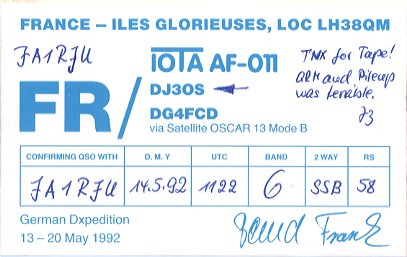
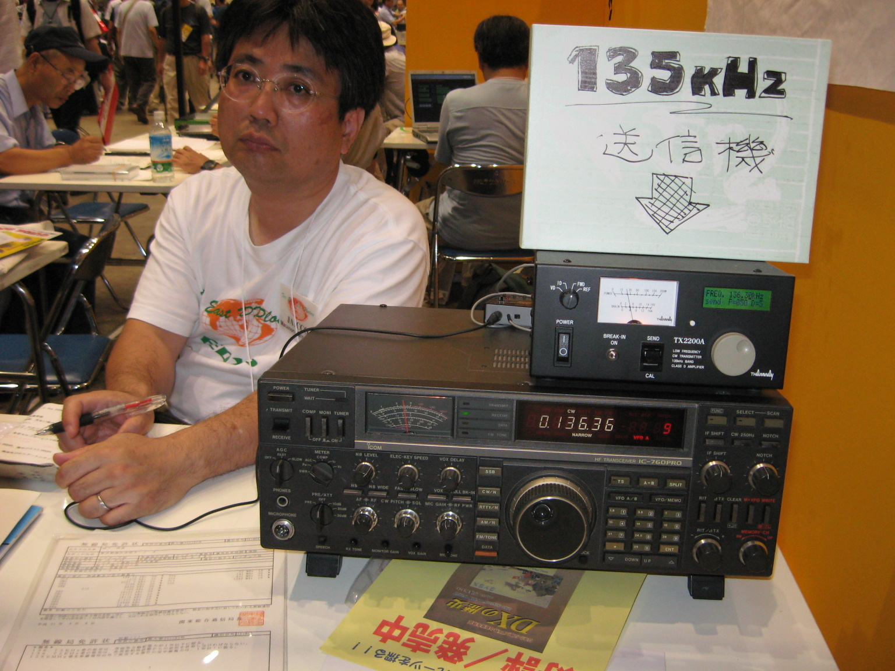
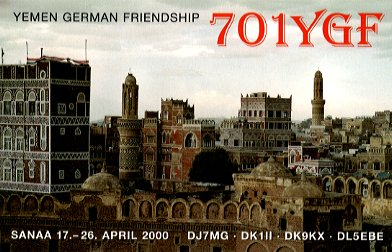

2009年総集編
サイクル24の太陽活動は相変わらず低調。昨年の秋口から若干の上昇の兆しが見られてきたが、
急激な上昇は見込みは無さそう。サイクル24のピークは2013年5月頃と予想されているが...。
[Back Issues Jan-Dec.2009]
TIME:UTC(JST-09:00)
Report from JA1RJU(PM95sq)
31.Dec.2009(15:00c)
Report from JA1RJU(PM95sq)
30.Dec.2009(15:00c)
Report from JA1RJU(PM95sq)
29.Dec.2009(15:00c)
Report from JA1RJU(PM95sq)
28.Dec.2009(15:00c)
Report from JA1RJU(PM95sq)
27.Dec.2009(15:00c)
Report from JA1RJU(PM95sq)
26.Dec.2009(15:00c)
Report from JA1RJU(PM95sq)
25.Dec.2009(15:00c)
Report from JA1RJU(PM95sq)
24.Dec.2009(15:00c)
Report from JA1RJU(PM95sq)
23.Dec.2009(15:00c)
Report from JA1RJU(PM95sq)
22.Dec.2009(15:00c)
Report from JA1RJU(PM95sq)
21.Dec.2009(15:00c)
Report from JA1RJU(PM95sq)
20.Dec.2009(15:00c)
Report from JA1RJU(PM95sq)
19.Dec.2009(15:00c)
Report from JA1RJU(PM95sq)
18.Dec.2009(15:00c)
Report from JA1RJU(PM95sq)
17.Dec.2009(15:00c)
Report from JA1RJU(PM95sq)
16.Dec.2009(15:00c)
Report from JA1RJU(PM95sq)
15.Dec.2009(15:00c)
Report from JA1RJU(PM95sq)
14.Dec.2009(15:00c)
Report from JA1RJU(PM95sq)
13.Dec.2009(15:00c)
Report from JA1RJU(PM95sq)
12.Dec.2009(15:00c)
Report from JA1RJU(PM95sq)
11.Dec.2009(15:00c)
VK-TV 03:00- 46.172 -- weak
Report from JA1RJU(PM95sq)
10.Dec.2009(15:00c)
Report from JA1RJU(PM95sq)
09.Dec.2009(15:00c)
Report from JA1RJU(PM95sq)
08.Dec.2009(15:00c)
Report from JA1RJU(PM95sq)
07.Dec.2009(15:00c)
Report from JA1RJU(PM95sq)
06.Dec.2009(15:00c)
Report from JA1RJU(PM95sq)
05.Dec.2009(15:00c)
Report from JA1RJU(PM95sq)
04.Dec.2009(15:00c)
Report from JA1RJU(PM95sq)
03.Dec.2009(15:00c)
Report from JA1RJU(PM95sq)
02.Dec.2009(15:00c)
Report from JA1RJU(PM95sq)
01.Dec.2009(15:00c)
Report from JA1RJU(PM95sq)
30.Nov.2009(15:00c)
Report from JA1RJU(PM95sq)
29.Nov.2009(15:00c)
Report from JA1RJU(PM95sq)
28.Nov.2009(15:00c)
Report from JA1RJU(PM95sq)
27.Nov.2009(15:00c)
VK-TV 05:30- 46.172 --
Report from JA1RJU(PM95sq)
26.Nov.2009(15:00c)
Report from JA1RJU(PM95sq)
25.Nov.2009(15:00c)
ZL-TV 06:40- 45.24/25/260 -- strong!
VK-TV 06:40- 46.172 --
VK4ABW 07:02 50.110 SSB @
VK4SIX 07:04 50.110 SSB @
VK4ABW 07:13 50.130 SSB
VK4BKP 07:14 50.110 SSB @
VK4SIX 07:23 50.110 SSB CQing
VK4ABW 07:30 50.110 SSB CQing
DU7/PA0HIP 07:34 50.110/130 CW CQing RST599
VK4SIX 07:53 50.110 SSB still open !
(VK5BC 08:43 50.110 SSB JA6)
(VK3OT 08:49 50.110 SSB JA6)
Report from JA1RJU(PM95sq)
24.Nov.2009(15:00c)
ZL-TV 06:30- 45.240/260 --
VK-TV 06:30- 46.172/240 -- Loud!
Report from JA1RJU(PM95sq)
23.Nov.2009(15:00c)
Report from JA1RJU(PM95sq)
22.Nov.2009(15:00c)
VK-TV 05:20- 46.172 --
Report from JA1RJU(PM95sq)
21.Nov.2009(15:00c)
Report from JA1RJU(PM95sq)
20.Nov.2009(15:00c)
Report from JA1RJU(PM95sq)
19.Nov.2009(15:00c)
VK-TV 05:30- 46.172 --
Report from JA1RJU(PM95sq)
18.Nov.2009(15:00c)
Report from JA1RJU(PM95sq)
17.Nov.2009(15:00c)
Report from JA1RJU(PM95sq)
16.Nov.2009(15:00c)
Report from JA1RJU(PM95sq)
15.Nov.2009(15:00c)
Report from JA1RJU(PM95sq)
14.Nov.2009(15:00c)
Report from JA1RJU(PM95sq)
13.Nov.2009(15:00c)
Report from JA1RJU(PM95sq)
12.Nov.2009(15:00c)
Report from JA1RJU(PM95sq)
11.Nov.2009(15:00c)
Report from JA1RJU(PM95sq)
10.Nov.2009(15:00c)
ZL-TV 04:40- 45.240/260 --
VK-TV 05:20- 46.172 --
DU7/PA0HIP 06:50 50.110 CW @ strong!
Report from JA1RJU(PM95sq)
09.Nov.2009(15:00c)
VK-TV 04:58- 46.172/240 --
Report from JA1RJU(PM95sq)
08.Nov.2009(15:00c)
VK-TV 04:35- 46.172/240 --
Report from JA1RJU(PM95sq)
07.Nov.2009(15:00c)
Report from JA1RJU(PM95sq)
06.Nov.2009(15:00c)
Report from JA1RJU(PM95sq)
05.Nov.2009(15:00c)
Report from JA1RJU(PM95sq)
04.Nov.2009(15:00c)
Report from JA1RJU(PM95sq)
03.Nov.2009(15:00c)
VK-TV 05:00- 46.172 --
Report from JA1RJU(PM95sq)
02.Nov.2009(15:00c)
VK-TV 04:28- 46.172 -- weak
Report from JA1RJU(PM95sq)
01.Nov.2009(15:00c)
Report from JA1RJU(PM95sq)
31.Oct.2009(15:00c)
VK-TV 03:40- 46.172 --
Report from JA1RJU(PM95sq)
30.Oct.2009(15:00c)
VK-TV 03:48- 46.172 -- strong! S9+
ZL-TV 04:00- 45.250/260 -- weak
(VK4MA.4WM 04:14- 50.105/110 CW/SSB JA7)
| ◎ 46.172MHzのVK-TV(RTQ0)が強力に入感していたが、VK4'sがオープンしたのはJA7の北日本だけ。 JA1エリアでは50MHz帯でのVKからの信号は確認出来なかった。ZL-TVは聞こえてもまだ弱い。 |
Report from JA1RJU(PM95sq)
29.Oct.2009(15:00c)
VK-TV 05:30- 46.172 --
Report from JA1RJU(PM95sq)
28.Oct.2009(15:00c)
VK-TV 05:36- 46.172 --
VK-TV 05:45- 46.240 -- strong! S9 to 06:50z
| ◎ 0545z頃から46.240MHzのVK-TV(ABMN0)が強力に入感していたが、50MHz帯でのVKからの信号は確認出来なかった。 TV信号の上昇と共に、VK4DD、VK4WMなどのVK'sがCQをだしてくれたがパスは無かった。 QLDの46.172MHz(RTQ0)が終始弱かったので、今日のJA-VKのパスはVK2寄りのオープンだったと思われる。 |
Report from JA1RJU(PM95sq)
27.Oct.2009(15:00c)
VK-TV 05:10- 46.172 --
VK4MA 05:46 50.105 CW CQing
VK4MA 05:54 50.105 CW @
VK4DD 05:57 50.110/115 CW CQing
VK4WM 05:58 50.110 CW CQing
VK4DD 06:07 50.115 CW @
VK4MA 06:14 50.120 SSB @
VK4WM 06:18 50.105 CW
VK4MA 06:22 50.107 CW
VK4MA 06:24 50.120 SSB CQing
VK4MA 06:30 50.100 CW CQ and F.out.
Report from JA1RJU(PM95sq)
26.Oct.2009(15:00c)
VK-TV 03:10- 46.172 -- RTQ0(46.1717MHz)
VK-TV 04:43- 46.172 --
VK-TV 04:43- 46.240 -- ABMN0(46.240MHz)
Report from JA1RJU(PM95sq)
25.Oct.2009(15:00c)
VK-TV 04:05- 46.172 --
VK4BKP 05:15 50.110 SSB @
VK4ABW 05:18 50.110/125 SSB QH30gt
VK4BKP 05:20 50.125 SSB
VK4WM 05:25 50.105 CW
VK4ABW 05:29 50.128 SSB
VK4FP 05:47 50.115 SSB
VK4ABW 05:48 50.128 SSB @
VK4TL 06:00 50.100 CW
VK4MA 06:04 50.102 CW @
VK4ABW 06:30 50.128 SSB
| ◎ 今日も午後からVK4がFBにオープンした。"VKオープン"後の最初の休日でJA局からのQRVも多く、 VK4ABW・Garyは、今日のオープンだけで35局のJA'sと初の中国・BD7NWF(OL72)とQSO出来たとの事。 VK4ABW・Garyは6mのEME(今日のパワーは1KW)の実績を持つだけあり信号は強力で、 他のVK4'sがフェードアウトした06:15z以降も、ローカル局とQSOしている彼の信号はRS57で聞こえていた。 |
Report from JA1RJU(PM95sq)
24.Oct.2009(15:00c)
VK-TV 03:50- 46.172 --
VK4KAY 04:53 50.110 CW CQ
VK4BKP 04:54 50.110 SSB @
VK4KAY 04:56 50.110/120 SSB @
VK4EK 05:05 50.110/120 SSB @
VK4WM 05:08 50.110 CW @
VK4EK 04:12 50.110/140 SSB
VK4KAY 05:13 50.110 SSB CQ
VK4BKP 05:15 50.110/125 SSB CQ
VK-TV 06:40- 46.172 -- still open 46MHz-TV
VK-TV 06:40- 46.240 -- ABMN0(46.239MHz)
|
◎ 午後から46.172MHzのVKのTV-Videoの入感が認められた約一時間後にVK4がFBにオープンした。 JA1エリアで確認、QSO出来たのはリポートの4局だけだった。 入感していた時間は30分程度の短い時間だったが、信号はピーク時にはRS59で強力に聞こえていた。 |
Report from JA1RJU(PM95sq)
23.Oct.2009(15:00c)
ZL-TV 03:10- 45.250 -- Max S7
VK-TV 03:10- 46.172 --
VK-TV 07:00- 46.172 -- strong Max S9
(VK4ABW 10:52- 50.110 SSB JA3(H) & JA2IGY/JA6YBR/b into VK4ABW)
|
◎ 久しぶりに午後から45/46MHz帯のVK/ZLのTV-Video信号が入感していた。
信号は一時的に上昇するもののまだ"強力"とは言えない。 ここのところハワイのKH7Y、NH6PなどとE51CG(BG08ct)間でパスがあり、赤道越えの南北の伝搬リポートがクラスターに上げられていた。 まだ、VK-JAとの6mのオープンはリポートされてはいないが、そろそろ単発的に入感するかも知れない。 |
Report from JA1RJU(PM95sq) 22.Oct.2009(15:00c) Report from JA1RJU(PM95sq) 21.Oct.2009(15:00c)
|
◎ Midway IslandのDX-Pedition・K4Mの運用は10月19日に終了した。
160m〜10mでの総QSO数は61,077だった。
当初の予定では50.115MHzのSSB/CWとEME(WSJT)での運用が計画されていたが、残念ながら6mが運用されることは無かった。 チームマネジャーのN1DG・Donからの連絡では、現地に到着してアンテナ工事の許可を管理者に提示したところ、 6mのアンテナは去年の4月に承認されたリストに載っていなかったことが判明。 許可無くアンテナを上げることは、100万羽以上の鳥に危害を与える恐れがあるとの理由で拒否された。 許可書の修正には2週間を要するため、今回の運用中は無理と判断され残念ながら6mの運用は行われなかった。 |
Report from JA1RJU(PM95sq) 20.Oct.2009(15:00c) Report from JA1RJU(PM95sq) 19.Oct.2009(15:00c) Report from JA1RJU(PM95sq) 18.Oct.2009(15:00c) Report from JA1RJU(PM95sq) 17.Oct.2009(15:00c)
|
◎ 50MHzのNews機関紙・"The 50MHz DX Bulletin"の2009年9月号によると、50MHzのアクティブ局として著名なG4UPS・Ted Collins氏が、
今年の6月に亡くなったと報じている。 JAの6mマンにはG4UPSと言うよりも"ZD8TC"のコールサインで有名。 G4UPS・Tedは1981〜82年当時、ロングパスで入感した大西洋の孤島・Ascension IslandからZD8TCでアクティブにQRV、 多くのJAにアフリカの貴重な "NEW"をサービスしてくれた。ご冥福をお祈りします。 |
Report from JA1RJU(PM95sq) 16.Oct.2009(15:00c) Report from JA1RJU(PM95sq) 15.Oct.2009(15:00c) Report from JA1RJU(PM95sq) 14.Oct.2009(15:00c) Report from JA1RJU(PM95sq) 13.Oct.2009(15:00c)
|
◎ Midway IslandのDX-Pedition・K4Mの運用が始まった。出発時にチャーターした飛行機のトラブルでホノルルからの出発が予定よりも遅れ、
現地到着は深夜になった。夜明けと共にアンテナの作業を開始、日本時間の昼過ぎに14/10MHzで運用が確認されている。 6mでの運用(50.115MHz)も予定されているが、メンバーがどの程度6mの運用に時間を割いてくれるか？が問題。 コンデション的には日本とのオープンの可能性もある。運用予定は10月19日まで。 |
Report from JA1RJU(PM95sq) 12.Oct.2009(15:00c) Report from JA1RJU(PM95sq) 11.Oct.2009(15:00c) Report from JA1RJU(QM06cb) 10.Oct.2009(15:00c) Report from JA1RJU(QM06cb) 09.Oct.2009(15:00c) Report from JA1RJU(PM95sq) 08.Oct.2009(15:00c)
| ◎ 本土に接近していた超大型台風18号は沖縄・南大東島に大きな被害を与え、九州沖から太平洋沿岸を北上、 未明から午前中にかけて関東地方を通過した。 紀伊半島沖をかすめて愛知県知多半島から本土に上陸した台風は、当初の予想では新潟沖の日本海に抜けるはずだったが、 台風は本土を縦断するコースを取り、午前中に関東西部を通り、午後には北関東から東北地方南部の福島、 宮城を通り岩手県三陸海岸沖の太平洋上に抜ける模様。 関東平野の内陸部を通過する台風は久しぶりで、東京都西部の八王子市では瞬間最大風速32mを超える強風が観測された。 |
Report from JA1RJU(PM95sq) 07.Oct.2009(15:00c) Report from JA1RJU(PM95sq) 06.Oct.2009(15:00c) Report from JA1RJU(PM95sq) 05.Oct.2009(15:00c)
|
◎ サイクル24も期待に反して太陽活動も全く上昇の気配が見られなかったが、
9月20日頃から僅かにSSN/SF値に変化が現れてきた。 2009年5月8日のNOAAの太陽活動周期24予測委員会の発表では、太陽活動極小期は2008年12月と確認されたと報告している。 これはまだあくまでも予測の段階だが、委員会の発表する次期活動周期の太陽活動極大期は2013年5月で、 太陽黒点数は最大でも90〜100程度と低いものになると予測している。 サイクル23のピークではSSN値は120を少し超えたが、サイクル24のピークではこれを若干下回る模様。 ◎ 久しぶりにコンウェイ・リーフ(Conway Reef)から3D20CRのコールサインで大規模なグループによるDX Peditionの運用が行われている。 この局は160m〜10mでアクティブにQRVしていて10mでも強力に入感している。 6mでも50.124MHzでの運用が予定されているので要注意！？。運用は10月18日までの予定。 ◎ 9月下旬からフランスのグループによるグロリオソ(Glorioso Island)のDX Peditionの運用が行われているが、 160m〜10mでFBにオープンするものの、今回は残念ながら6mでの運用は無かった。(注：10/7日にQRT。総QSO数は50,301) グロリオソは太陽黒点の上昇期だった1992年5月にドイツ人グループが運用したFR/DJ3OSがJA1/JA2など東日本で入感、 QSO出来たが"無許可上陸"を理由にDXCCには認められなかった。 先の7O1YGF(イエメン)のように"後追い"でDXCCに認可されたら、また6mのNEWが増えるのだが、 これはチョット無理！？。 
 DXCCには認められなかったGlorioso IslandのFR/DJ3OSのQSL |
Report from JA1RJU(PM95sq) 04.Oct.2009(15:00c) Report from JA1RJU(PM95sq) 03.Oct.2009(15:00c) Report from JA1RJU(QM06cb) 02.Oct.2009(15:00c) Report from JA1RJU(QM06cb) 01.Oct.2009(15:00c)
Report from JA1RJU(QM06cb) 30.Sep.2009(15:00c) Report from JA1RJU(PM95sq) 29.Sep.2009(15:00c) Report from JA1RJU(PM95sq) 28.Sep.2009(15:00c) Report from JA1RJU(PM95sq) 27.Sep.2009(15:00c) Report from JA1RJU(PM95sq) 26.Sep.2009(15:00c) Report from JA1RJU(PM95sq) 25.Sep.2009(15:00c) Report from JA1RJU(PM95sq) 24.Sep.2009(15:00c) Report from JA1RJU(PM95sq) 23.Sep.2009(15:00c) Report from JA1RJU(PM95sq) 22.Sep.2009(15:00c) Report from JA1RJU(PM95sq) 21.Sep.2009(15:00c) Report from JA1RJU(PM95sq) 19-20.Sep.2009(15:00c) ◎ 第38回東北6SGミーティング Report from JA1RJU(PM95sq) 18.Sep.2009(15:00c) Report from JA1RJU(PM95sq) 17.Sep.2009(15:00c) Report from JA1RJU(PM95sq) 16.Sep.2009(15:00c) Report from JA1RJU(PM95sq) 15.Sep.2009(15:00c) Report from JA1RJU(PM95sq) 14.Sep.2009(15:00c) AH2G/B 08:37- 50.0045 CW Beacon (Guam Is.) JD1BMM 08:55 50.180 SSB Minami torishima Is AH2G/B 09:20- 50.0045 CW still good! Report from JA1RJU(PM95sq) 13.Sep.2009(15:00c) Report from JA1RJU(PM95sq) 12.Sep.2009(15:00c) BV2YA/b 01:10- 50.001 CW Beacon VR2SIX/b 04:00- 50.075 CW Beacon JD1BMM 08:50 50.180/183 SSB Minami torishima Is Report from JA1RJU(PM95sq) 11.Sep.2009(15:00c) BV2YA/b 06:43- 50.001 CW Beacon BV2YA/b 08:23- 50.001 CW Beacon Report from JA1RJU(PM95sq) 10.Sep.2009(15:00c) Report from JA1RJU(PM95sq) 09.Sep.2009(15:00c) Report from JA1RJU(PM95sq) 08.Sep.2009(15:00c) Report from JA1RJU(PM95sq) 07.Sep.2009(15:00c) Report from JA1RJU(PM95sq) 06.Sep.2009(15:00c) Report from JA1RJU(PM95sq) 05.Sep.2009(15:00c) Report from JA1RJU(PM95sq) 04.Sep.2009(15:00c) Report from JA1RJU(PM95sq) 03.Sep.2009(15:00c) AH2G/B 08:40- 50.0045 CW Beacon (Guam Is.) AH2G/B 09:50- 50.0045 CW Beacon still good! Report from JA1RJU(PM95sq) 02.Sep.2009(15:00c) Report from JA1RJU(PM95sq) 01.Sep.2009(15:00c) BV2YA/b 05:53- 50.001 CW Beacon
Report from JA1RJU(PM95sq) 31.Aug.2009(15:00c) Report from JA1RJU(PM95sq) 30.Aug.2009(15:00c) BD4JWU 03:14 50.110 CW CQing Report from JA1RJU(PM95sq) 29.Aug.2009(15:00c) VR2SIX/b 01:20- 50.075 CW Beacon BV2YA/b 08:05- 50.001 CW Beacon VR2SIX/b 09:27- 50.075 CW Beacon Report from JA1RJU(PM95sq) 28.Aug.2009(15:00c) BV2YA/b 04:34- 50.001 CW Beacon VR2SIX/b 05:10- 50.075 CW Beacon AH2G/B 06:28 50.0045 CW Beacon (Guam Is.) VR2SIX/b 08:55- 50.075 CW Beacon Report from JA1RJU(PM95sq) 27.Aug.2009(15:00c) BV2YA/b 01:24- 50.001 CW Beacon Report from JA1RJU(PM95sq) 26.Aug.2009(15:00c) BV2YA/b 01:40- 50.001 CW Beacon Report from JA1RJU(PM95sq) 25.Aug.2009(15:00c) BV2YA/b 01:45- 50.001 CW Beacon Report from JA1RJU(PM95sq) 24.Aug.2009(15:00c) Report from JA1RJU(PM95sq) 23.Aug.2009(15:00c) ◎ ハムフェア2009(10:00〜17:00) Report from JA1RJU(PM95sq) 22.Aug.2009(15:00c) ◎ ハムフェア2009(10:00〜17:00)


Report from JA1RJU(PM95sq)
21.Aug.2009(15:00c)
Report from JA1RJU(PM95sq)
20.Aug.2009(15:00c)
BV2YA/b 02:30- 50.001 CW Beacon
VR2SIX/b 02:30- 50.075 CW Beacon
VR2SIX/b 07:50- 50.075 CW Beacon still good !
Report from JA1RJU(PM95sq)
19.Aug.2009(15:00c)
BV2YA/b 05:35- 50.001 CW Beacon
VR2SIX/b 05:35- 50.075 CW Beacon
Report from JA1RJU(PM95sq)
18.Aug.2009(15:00c)
VR2SIX/b 02:45- 50.075 CW Beacon
Report from JA1RJU(PM95sq)
17.Aug.2009(15:00c)
Report from JA1RJU(PM95sq)
16.Aug.2009(15:00c)
Report from JA1RJU(PM95sq)
15.Aug.2009(15:00c)
BV2YA/b 01:15- 50.001 CW Beacon
VR2SIX/b 01:15- 50.075 CW Beacon
Report from JA1RJU(PM95sq)
14.Aug.2009(15:00c)
BV2YA/b 01:45- 50.001 CW Beacon
VR2SIX/b 02:20- 50.075 CW Beacon
BA8AG/4 07:29 50.100 CW IOTA AS-136
BV2YA/b 08:30- 50.001 CW Beacon
VR2SIX/b 08:30- 50.075 CW Beacon
VR2SIX/b 11:00- 50.075 CW Beacon still open!
Report from JA1RJU(PM95sq)
13.Aug.2009(15:00c)
|
◎ARRLのDXCCデスクは本日(8/13日)、2000年4月に行われた70(イエメン)のDX-Pedition、7O1YGFのQSLをDXCCへクレジットすると発表した。 7O1YGFの運用は、2000年4月22日から50MHzバンドでも、沖縄、鹿児島南部(与論島)でFBに入感してQSO出来ている。 しかし、その後、当時のイエメン政府からの免許発給問題でDXCCに認められなかった。 DXCCにNGとされていたQRVが「再検討の結果」としただけで、今回ARRLが何故今承認したのか、 その理由は記述されていないが、とにかく現在も正式な"政府"が流動的で定まらず、 アマチュア無線は"凍結"された状態が続き、QRVが行われていない数少ないエンティティーだけに、 7O1YGFの運用が認められたのは嬉しいニュースとなった。 ----------------------------------------------------- OPERATIONS APPROVED FOR DXCC CREDIT. (ARLD032 DX news) The following operations are approved for DXCC credit: Prince Edward and Marion Island, ZS8T,recent operation conducted by ZS6GCM; Yemen,7O1YGF,operation from April 16 to 26, 2000 |

Report from JA1RJU(PM95sq)
12.Aug.2009(15:00c)
BV2YA/b 01:20- 50.001 CW Beacon
BA7IO/4 01:30 50.098 CW IOTA AS-136
HL2KV 01:35 50.150 CW
HL5FKP 01:38 50.140 SSB
HL4GKR 01:40 50.190 SSB
BA4T 01:55 50.095 CW
Report from JA1RJU(PM95sq)
11.Aug.2009(15:00c)
HL2KV 01:40 50.110 CW CQing
Report from JA1RJU(PM95sq)
10.Aug.2009(15:00c)
VR2SIX/b 01:20- 50.075 CW Beacon
VR2IZ 01:33 50.115 CW
VR2UW 01:39 50.105 CW CQ DX
BV2YA/b 01:40- 50.001 CW Beacon
VR2IZ 02:15 50.105 CW CQing
Report from JA1RJU(PM95sq)
09.Aug.2009(15:00c)
K0HA 00:00- 50.095 CW
Report from JA1RJU(PM95sq)
08.Aug.2009(15:00c)
Report from JA1RJU(PM95sq)
07.Aug.2009(15:00c)
Report from JA1RJU(PM95sq)
06.Aug.2009(15:00c)
23:45-04:10z
K6FV/b.K6QXY.K7JA.N7XC.NR7T.W0RLI.N6RW.AD6W.
N6YK.AJ6T.XE2D...etc JA1.2.3.7.9
*********************************************
BV2YA/b 01:30- 50.001 CW Beacon
VR2SIX/b 01:30- 50.075 CW Beacon
Report from JA1RJU(PM95sq)
05.Aug.2009(15:00c)
23:55-23:59 K6FV/b.K6QXY.WA6KLK CW JA7(QM08).JA1(QM05)
*********************************************
VR2SIX/b 02:20- 50.075 CW Beacon
---------------------------------------------
08:07- UT7IL.EN500I.SV1DH.5B4AGM CW JA0/JA7/JA8/JA1(QM05.PM95)
---------------------------------------------
Report from JA1RJU(PM95sq)
04.Aug.2009(15:00c)
VR2SIX/b 00:30- 50.075 CW Beacon
VR2SIX/b 06:55- 50.075 CW Beacon
Report from JA1RJU(PM95sq)
03.Aug.2009(15:00c)
VR2SIX/b 01:50- 50.075 CW Beacon
Report from JA1RJU(PM95sq)
02.Aug.2009(15:00c)
--------------------------------------------------
◎ 第52回フィールドデーコンテスト
(01.AUG・21:00JST〜02.AUG・15:00JST)
--------------------------------------------------
BN2009SDT 00:50 50.115 SSB
BV2YA/b 03:00- 50.001 CW Beacon
VR2SIX/b 03:00- 50.075 CW Beacon
VR2009EAG 03:15 50.115 SSB OP & QSL VR2XMT
BV2YA/b 06:00- 50.001 CW Beacon
BD4TBJ 06:33 50.115 SSB
Report from JA1RJU(PM95sq)
01.Aug.2009(15:00c)
-------------------------------------------------
◎ 第52回フィールドデーコンテスト
(01.AUG・21:00JST〜02.AUG・15:00JST)
50MHz帯 50.050-50.090MHz(CW)
50.250-51.000MHz(AM/SSB)
51.000-52.000MHz(FM)
(注1) A2A電波による電信はAM/SSB、F2A電波による
電信はFMの使用周波数帯とする。
(注2) 51.000MHzは、FMの使用周波数帯とする。
-------------------------------------------------
Report from JA1RJU(PM95sq)
31.Jul.2009(15:00c)
BV2YA/b 06:30- 50.001 CW Beacon
Report from JA1RJU(PM95sq)
30.Jul.2009(15:00c)
BV2YA/b 01:00- 50.001 CW Beacon
Report from JA1RJU(PM95sq)
29.Jul.2009(15:00c)
BV2YA/b 00:50- 50.001 CW Beacon
VR2SIX/b 00:50- 50.075 CW Beacon
VR2SIX/b 08:00- 50.075 CW Beacon
Report from JA1RJU(PM95sq)
28.Jul.2009(15:00c)
BV2YA/b 01:00- 50.001 CW Beacon
BV2YA/b 07:15- 50.001 CW Beacon
VR2SIX/b 07:25- 50.075 CW Beacon
Report from JA1RJU(PM95sq)
27.Jul.2009(15:00c)
BV2YA/b 00:30- 50.001 CW Beacon
VR2SIX/b 00:30- 50.075 CW Beacon
Report from JA1RJU(PM95sq)
26.Jul.2009(15:00c)
BV2YA/b 00:30- 50.001 CW Beacon
BW9/JH3GCN 00:32 50.115 CW
BW9/JH3GCN 00:36 50.115 SSB
BU2AU 05:35 50.115 SSB
HL1VAU/4 06:06 50.110 CW
BG4KYA 06:10 50.110 SSB
BV2009WGK 06:13 50.106 CW
BV0K 06:31 50.115 CW
BV4PK 06:53 50.107 CW
HL1IBG 06:55 50.105 CW CQing
BV2YA/b 10:00- 50.001 CW Beacon
VR2SIX/b 10:00- 50.075 CW Beacon
Report from JA1RJU(PM95sq)
25.Jul.2009(15:00c)
BV2YA/b 08:00- 50.001 CW Beacon
VR2SIX/b 08:00- 50.075 CW Beacon
VR2009EAG 08:10 50.115 SSB OP & QSL VR2XMT
BD4CZX 08:10 50.115 SSB CQing
VR2UW 08:12 50.102 CW
BD4CZX 08:21 50.110 SSB
BD7NWF 08:25 50.130 SSB CQing
HL2AGC 08:26 50.130 SSB CQing
BU2AI 09:12 50.102 CW
DS1PCF/2 09:28 50.111 CW CQing
Report from JA1RJU(PM95sq)
24.Jul.2009(15:00c)
BV2YA/b 02:50- 50.001 CW Beacon
Report from JA1RJU(PM95sq)
23.Jul.2009(15:00c)
BV2YA/b 01:50- 50.001 CW Beacon
VR2SIX/b 01:50- 50.075 CW Beacon
Report from JA1RJU(PM95sq)
22.Jul.2009(15:00c)
BV2YA/b 00:40- 50.001 CW Beacon
VR2SIX/b 00:50- 50.075 CW Beacon
BV2YA/b 04:40- 50.001 CW Beacon
DU1EV/B 04:40- 50.008 CW Beacon
Report from JA1RJU(PM95sq)
21.Jul.2009(15:00c)
BV2YA/b 00:00- 50.001 CW Beacon
VR2SIX/b 00:00- 50.075 CW Beacon
Report from JA1RJU(PM95sq)
20.Jul.2009(15:00c)
(WZ8D 01:04 50.085 CW JA1.2)
BV2YA/b 03:15- 50.001 CW Beacon
VR2SIX/b 03:15- 50.075 CW Beacon
BV2YA/b 05:50- 50.001 CW Beacon
Report from JA1RJU(PM95sq)
19.Jul.2009(15:00c)
BD4QH 00:55 50.210 SSB
BV2YA/b 01:30- 50.001 CW Beacon
VR2SIX/b 01:30- 50.075 CW Beacon
BA8AG 01:30 50.102 CW CQing
BU2AI 01:46 50.1025 CW CQing
BD9BA 01:49 50.103 CW
DU1EV 02:10 50.103 CW CQing
BA8AG 02:50 50.101 CW CQing
(LA8AJA 08:46 50.104 CW JA6)
(LA8HGA 09:13 50.116/114 CW JA4)
(08:16z〜F8DBF.LA8AJA.LA8HGA...etc CW JA2〜6.7.9)
BU2AI 10:00 50.103 CW CQing
Report from JA1RJU(PM95sq)
18.Jul.2009(15:00c)
(00:00〜 K6FV/b.N6RMJ.K0GU.K9RX/7.VE3CDX/W7.K5XX.K6EL.W6XI.K7JA...etc)
K0GU 00:18 50.080 CW
DS4DBF 01:09 50.099 CW CQ NA
Report from JA1RJU(PM95sq)
17.Jul.2009(15:00c)
(22:09〜 N3XX.WZ8D.K4PI.K6EID.AC4TI...etc Report from QM08/05/PM96/84)
*********************************************
BV2YA/b 01:30- 50.001 CW Beacon
VR2SIX/b 01:30- 50.075 CW Beacon
BV2YA/b 05:30- 50.001 CW Beacon
VR2SIX/b 05:30- 50.075 CW Beacon
JI1FGX/DU9 06:50 50.110 SSB
Report from JA1RJU(PM95sq)
16.Jul.2009(15:00c)
BV2YA/b 08:20- 50.001 CW Beacon
Report from JA1RJU(PM95sq)
15.Jul.2009(15:00c)
BV2YA/b 00:30- 50.001 CW Beacon
VR2SIX/b 00:30- 50.075 CW Beacon
W3STX/KH0 00:34 50.130 CW CQing
UK9AA 04:14 50.103 CW CQing
UK9AA 04:48 50.103 CW still CQing
JD1BMM 04:51 50.103 CW Calling UK9AA
JD1BMM 05:06 50.107 CW CQing
DU7/PA0HIP 07:41 50.105 CW CQing
DU7/PA0HIP 09:00 50.105 CW CQing
Report from JA1RJU(PM95sq)
14.Jul.2009(15:00c)
W3STX/KH0 04:40 50.130 CW CQing Saipan Is
JD1BMM 05:00 50.180 CW strong!
Report from JA1RJU(PM95sq)
13.Jul.2009(15:00c)
UN1SIX/b 07:05- 50.0234 CW Beacon
(4Z4TL 07:30 50.102 CW JA2.8)
(YT1QQ 07:45 50.099 CW JA8)
(CT1HZE 07:58 50.082 CW JA8)
UK8OM 09:08 50.103 CW CQing FB
UK8OM 09:33 50.103 CW CQ again!
Report from JA1RJU(PM95sq)
12.Jul.2009(15:00c)
K0HA 23:45 50.097 CW
*********************************************
K0HA 00:00 50.097 CW
(KA9CFD 00:02 50.093 CW JA7)
(W7GJ 00:49 50.099 CW JA2)
BV2YA/b 02:00- 50.001 CW Beacon
VR2SIX/b 02:00- 50.075 CW Beacon
W3STX/KH0 05:40 50.130 CW (QSL via JR3STX)
AH2G/B 06:15- 50.0045 CW Beacon
DK1MAX 07:48 50.107 CW
Report from JA1RJU(QM06cb)
11.Jul.2009(15:00c)
(K0GU 22:12 50.083 CW QM08)
(VE7SL 22:19 50.083 CW QM08)
N5DG 22:23 50.083 CW QM08/QM06/PM96
(K5RK 22:33 50.094 CW JA7.9.0)
K0HA 22:45 50.097 CW
JD1BMM 22:58 50.181 SSB
W7GJ 23:15 50.087 CW QM06/PM95
W7GJ 23:18 50.090 CW QM06 599 !
DS1PCF/2 23:58 50.112 CW
*********************************************
W3STX/KH0 00:03 50.130 CW
W3STX/KH0 00:12 50.130 CW QSL via JR3STX
BA8AG 00:36 50.097 CW
DS5JQK 00:46 50.150 CW
K0GU 01:31 50.104 CW
6K5CQY 01:40 50.104 CW
K0GU 01:40 50.104 CW QSO with 6K5CQY
N7RK 02:09 50.083 CW
VR2SIX/b 04:00- 50.075 CW Beacon
Report from JA1RJU(QM06cb)
10.Jul.2009(15:00c)
VR2SIX/b 01:13- 50.075 CW Beacon
AH2G/B 07:20- 50.0045 CW Beacon strong!
BU2AQ 08:45 50.110 SSB
BV2009WGK 09:35 50.106 CW
BV2YA/b 12:25- 50.001 CW Beacon
VR2SIX/b 12:25- 50.075 CW Beacon
|
◎昨日の北米の賑わいがウソの様に、今朝のコンデションは平穏？。
やはり、50MHzでは"二匹目のドジョウは"直ぐには出てこない？。
北米の賑わいをよそに、午後のヨーロッパ方面のコンデションは落ち込んでしまったのが残念。 現在ドイツに滞在しているJR1AIB・井上さんが、今週末(日本時間の土・日の夕方)にHB0(LIECHTENSTEIN)からJA向けに6mの運用を予定している。 使用するRIGは不明だが、600WのAMP(東京ハイパワー)と4eleでの運用。 コールサインはHB0/DJ1AIBを使用する。 JA向けとは言え、コンデションが予測出来ない夏場の伝搬に加え、 ヨーロッパ方面のコンデションが下降ぎみのこの時期の運用なのでQSOはかなり難しい...？。 |
Report from JA1RJU(QM06cb)
09.Jul.2009(15:00c)
= Good Open to East Coast US and Canada into QM08!! 54 QSO's =
22:35z-
[W1(W1JJ.K1SG.W1VHF.AA1QD.K1IM.K1NA.K1RP.K1MS.N1BUG.W1JR)
W2(K2QE).W3(W3CMP.W3EP.K3KYR.W3UR.K3TKJ).W4(W4SO.K4BP...etc).
W5(W5KI.N5DG...etc.).W6.W7(AA7A.K7JA.W7RV...etc).
W8(N8GZ.WZ8D...etc).W9(KA9CFD...etc).W0(K0HA...etc).
VE2(VE2DFO...etc).VE3.XE2D and HI3TEJ...etc]
---------------------------------------------------
W4SO 22:35 50.085 CW
BD9BA 22:58 50.105 CW
(HI3TEJ 22:57 50.083 CW QM08)
(W1JJ 22:58 50.083 CW QM08)
(W1VHF 23:00 50.083 CW QM08)
(AA1QD 23:03 50.083 CW QM08)
(K1MS 23:04 50.083 CW QM08)
(K1IM 23:05 50.083 CW QM08)
(W3EP 23:10 50.083 CW QM08)
VE2DFO 23:11 50.083 CW QM08 & 06(H)
(W1JR 23:12 50.083 CW QM08)
(K1NA 23:14 50.083 CW QM08)
(K1RP 23:17 50.083 CW QM08)
KA9CFD 23:25 50.083 CW QM08 & 06(H)
*********************************************
K7JA 00:20 50.083 CW QM08 & 06(H)
W7RV 00:40 50.083 CW QM08)
KA9CFD 00:45 50.090 CW
N5DG 00:46 50.090 CW
AA7A 00:49 50.090 CW
W7RV 00:51 50.090 CW
W5KI 01:17 50.090 CW
K0HA 01:18 50.090 CW
XE2D 01:25 50.090 CW
K9WZB 01:31 50.090 CW
|
◎今朝の北米のオープンは夏季の"Es伝搬"の時期としては特筆すべきものとなった。 22:30z(0730JST)頃から入感してきた北米南部のW4に続いて、コンデションは目まぐるしく変化し、 全米の各エリアが次々と入感してきた。JA側では特に東北地方南部のQM08でのコンデションが良好で、 22:50zを過ぎる頃から、W1を中心にVE2、W1、W2、W3までの北米東部と多数QSO出来ている。 同時間に入感したVE2DFOはQM06/5の関東エリアでも短時間の入感があったが、 QM08とは信号のレベルに地域差があり、W1エリアにはQM06/5の信号が届いていながらも、 残念ながらQSOには至らなかった。 北米東部の入感のピークは23:10分頃の30分程度の短い時間帯だったが、 この日のコンデションが完全に終わったのは日本時間の1140JST(0240z)過ぎだった。 F2伝搬とは異なる珍しい夏場の"BIG OPEN"だった。 |
Report from JA1RJU(QM06cb)
08.Jul.2009(15:00c)
BV2YA/b 09:50- 50.001 CW Beacon
VR2SIX/b 09:50- 50.075 CW Beacon
BV2009WGK 10:15 50.106 CW
BD4TH 10:25 50.106 CW
Report from JA1RJU(PM95sq)
07.Jul.2009(15:00c)
BV2YA/b 23:30- 50.001 CW Beacon
VR2SIX/b 23:30- 50.075 CW Beacon
----------------------------------------------------
[21:59z-
W4GCB.W9RN.N4VN.W4SO.K3KO.N5XR.W5OZI.WD5K
K5XX.K5RK.N5DG.W7CNK.WY0V.W0VX.K0HA...etc.]
********************************************
[00:00-
K0HA.KM0T.K5RK.WD5K.N5DG.XE2D...etc. -00:28]
----------------------------------------------------
K0HA 00:00- 50.095 CW
BV2YA/b 00:00- 50.001 CW Beacon
BV2009WGK 02:19 50.106 CW
V6C 08:14 50.115 SSB OC-11
Report from JA1RJU(PM95sq)
06.Jul.2009(15:00c)
BV2YA/b 00:50- 50.001 CW Beacon
DU7/PA0HIP 07:48 50.105 CW CQing
DU7/PA0HIP 08:22 50.105 CW CQing
Report from JA1RJU(PM95sq)
05.Jul.2009(15:00c)
◎"6m AND DOWN CONTEST"
---------------------------------------------
BV2YA/b 22:10- 50.001 CW Beacon
(VR2009EAG 23:35 50.115 SSB JA6)
(N5DG 23:45 50.098 CW JA6)
*********************************************
(BV2009WGK 00:22 50.106 CW JA6)
(BM2JQL 00:29 50.120 SSB JA6)
9M6XRO 02:25 50.115 SSB
9M6XRO 06:00 50.102 CW
(V6C 08:25 50.115 SSB JA6)
(9M6XRO 08:39 50.110 CW JA6)
Report from JA1RJU(PM95sq)
04.Jul.2009(15:00c)
◎"6m AND DOWN CONTEST" (今日のDX-Reportの詳細は省略します)
---------------------------------------------------------
[00:00z-
K6FV/B.K0HA.K6QXY.9M2TO.JD1BMM.EN500I.UR3IFD.F8RZ
UY3ZZ.UY6IM.YT1AR.E75A.E72B(JA0).SV1DH.9A2SB.9A6R
DJ6RX.DL5MAE.DJ5JK.LX1NO(JA5).IK1EGC.IK0FTA.HA0DU
EA7KW.EA7RM.EA7HG.IS0GOX.CT1HZE(JA6).JT1CO.BG4TRF
BA8AG.BA4SI.DS1NSR.HL1IBG.9M6XRO.BV2YA/b...etc...
-13:52z]
----------------------------------------------------------
Report from JA1RJU(PM95sq)
03.Jul.2009(15:00c)
VR2SIX/b 01:30- 50.075 CW Beacon
HL2GY 02:47 50.105 CW
UT7QF 04:40 50.102 CW
BA4SI 04:52 50.099 CW
UW7CN 05:02 50.106 CW CQing No ans !?
UT7QF 05:20 50.103 CW CQing good sig!
UN1CZ 05:30 50.115 CW
UT5URW 05:31 50.084 CW
UR6QA 05:53 50.102 CW strong !
EN500I 07:00 50.112 CW
YO9HP 07:28 50.087 CW
Report from JA1RJU(PM95sq)
02.Jul.2009(15:00c)
VR2SIX/b 23:50- 50.075 CW Beacon
(JA6YBR/b 23:50- 50.017 CW Beacon (Miyazaki)
***************************************************
VR2SIX/b 04:40- 50.075 CW Beacon
(JA6YBR/b 04:40- 50.017 CW Beacon (Miyazaki)
UK8OM 05:50 50.101/103 CW
SP3DOI 06:05 50.101 CW strong !
UK9AA 06:32 50.103 CW UP+1KHz
UK8OM 06:34 50.103/099 CW
SP3RNZ 06:49 50.106 CW
UR3IFD 07:05 50.106 CW UP+1KHz
UK9AA 07:05 50.103 SSB/CW
(LA5YJ.EA7KW.DK3WG...etc. 07:20- CW JA0)
(OE4VIE 07:28 50.118 CW JA0)
JD1BMM 07:36 50.122 CW Minami torishima.
CT1HZE 07:52 50.088 CW
CT1HZE 08:13 50.088 CW good sig ! (IM57nh=11,292Km)
(EA8BLL 08:50 50.082 CW QSO with JA8)
UK8OM 13:22 50.099 CW UP+1KHz
(SV1DH 13:22 50.099 CW JA6)
(UY6IM 13:54 50.103 CW JA6)
(UK9AA 14:02 50.103 CW JA2-0)
(UY6IM 14:22 50.105 CW JA3.4.6)
Report from JA1RJU(PM95sq)
01.Jul.2009(15:00c)
BA8AG 02:14 50.101 CW CQing
UT7QF 05:42 50.102 CW
UT7QF 06:24 50.102 CW again good !
UK9AA 06:34 50.103 CW UP+1KHz good signal !
UK9AA 06:56 50.103 SSB RS59!
(SV1DH 07:00 50.100 CW JA1.2.3)
UK9AA 07:13 50.103 CW/SSB again !
BG4KYA 07:22 50.110 SSB
UK9AA 07:45 50.103 CW/SSB CQing still good !
Report from JA1RJU(PM95sq)
30.Jun.2009(15:00c)
BA7IO 01:09 50.097 CW CQing
BA8AG 01:40 50.101 CW CQing
BV2YA/b 01:48- 50.001 CW Beacon
VE7DAY 05:15 50.100 CW
(UK9AA 05:12- 50.102 CW JA7.8)
(UT2XQ 05:58 50.098 CW JA8)
KE7V 06:34 50.103 CW
KE7V 06:46 50.103 CW good sig!
K7SS 06:47 50.099 CW
NN7J 06:56 50.107 CW/SSB
K7SS 06:58 50.099 CW good sig!
VE7XF 07:25 50.093 CW CN89la
VE7CC 07:35 50.100 CW CN89re
VE7CC 07:37 50.100 CW good sig!
VE7XF 07:44 50.093 CW good sig!
VE7DAY 07:55 50.107 CW CO70ia
KE7V 08:10 50.103 CW
VE7DAY 08:46 50.107 CW good sig!
VE7DAY 09:10 50.107 CW CQing!
UK9AA 15:00 50.103 CW
Report from JA1RJU(PM95sq)
29.Jun.2009(15:00c)
NL7Z 06:00- 50.110 CW
NL7Z 06:11 50.110 CW good sig!
UT7QF 06:25 50.101 CW weak
(DJ5JK 06:37 50.099 CW JA8)
Report from JA1RJU(PM95sq)
28.Jun.2009(15:00c)
BV2YA/b 22:20- 50.001 CW Beacon
*********************************************
(00:20- K5RK.W6JRA.K6QXY.AA7A.UN7U.W7RV.K1NV/7.WZ8D...etc. into JA1.7.8.0)
---------------------------------------------
HL2KV 00:55 50.100 CW
BA7IO 01:25 50.098 CW
HL1IWD 05:20 50.105 CW
BV2YA/b 08:20- 50.001 CW Beacon
Report from JA1RJU(PM95sq)
27.Jun.2009(15:00c)
BV2YA/b 23:25- 50.001 CW Beacon
*********************************************
Report from JA1RJU(PM95sq)
26.Jun.2009(15:00c)
KH7Y 22:40- 50.105 CW
*********************************************
BV2YA/b 00:50- 50.001 CW Beacon
VR2SIX/b 00:50- 50.075 CW Beacon
SV1DH 06:40 50.102 CW
Report from JA1RJU(PM95sq)
25.Jun.2009(15:00c)
Report from JA1RJU(PM95sq)
24.Jun.2009(15:00c)
VR2SIX/b 00:00- 50.075 CW Beacon
BX4AP 00:10 50.120 SSB
BV2YA/b 01:30- 50.001 CW Beacon
9M2SIX/b 01:30- 50.005 CW Beacon
VR2SIX/b 01:30- 50.075 CW Beacon
BD7NWF 01:40 50.120 SSB CQing
VR2SIX/b 04:40- 50.075 CW Beacon
KG6DX 07:30 50.105 CW
Report from JA1RJU(PM95sq)
23.Jun.2009(15:00c)
BV2YA/b 00:30- 50.001 CW Beacon
VR2SIX/b 00:30- 50.075 CW Beacon
NA6XX 02:33 50.086 CW
DS5KJR 07:32 50.107 CW
HL2DBP 07:46 50.110 CW
6K2DIO 08:40 50.098 CW
Report from JA1RJU(QM06cb)
22.Jun.2009(15:00c)
N5JEH 22:48 50.091 CW N.M
*********************************************
VR2SIX/b 02:20- 50.075 CW Beacon
HL5FKP 05:34 50.115 CW
HL2GY 06:33 50.100 CW
EA7KW 06:51 50.107 CW
(EA4CWN 06:53 50.100 CW JA1)
HL2DBP 07:35 50.100 CW


Report from JA1RJU(QM06cb)
21.Jun.2009(15:00c)
KH7Y 23:00 50.105 CW weak into QM06
*********************************************
8J1P/JD1 00:05 50.255 SSB Ogasawara Is
BA7IO 00:49 50.098 CW
VR2SIX/b 01:00- 50.075 CW Beacon
K6FV/B 02:10 50.069 CW Beacon weak into QM06
K6FV 04:25 50.069 CW Not Beacon. CM87 #2933
NU6S 05:17 50.074 CW
KO7N 05:22 50.084 CW
K7XQ 05:22 50.075 CW
KG6I 05:27 50.084 CW
K7JA 05:38 50.099 CW
NA6XX 06:05 50.086 CW
AI6V 06:08 50.098 CW
HL2JFM 06:21 50.105 CW
6K5AQY 06:23 50.105 CW
(9H6A 06:38 50.086 CW)
BA8AG 06:46 50.101 CW
ON4GG 06:52 50.085 CW
DK1MAX 07:14 50.101 CW
HL2KV 07:16 50.105 CW
ON4IQ 07:18 50.089 CW
F8RZ 07:39 50.071 CW
(TA2ZAF 07:47 50.074 CW JA4.5.6)
HB9QQ 07:57 50.116/088 CW
BA4SI 08:08 50.092 CW CQ EU
(EA6SA 08:10 50.116 CW JA4.5.6)
BV1EK 08:21 50.084 CW
(EA2LU 08:22 50.087 CW JA5)
VR2XMT 08:24 50.115 SSB
(EA7KW 08:54 50.099 CW JA8)
VR2UW 09:06 50.102 CW
Report from JA1RJU(QM06cb)
20.Jun.2009(15:00c)
DS4CNB 23:51 50.109 CW
DU1EV 23:52 50.104 CW Not Beacon!
AH2G/B 23:54 50.0045 CW Beacon
VR2SIX/b 23:50 50.075 CW Beacon
*********************************************
DU1EV 00:00 50.104 CW CQ DX!
W6JRA 00:05 50.100 CW
N6CA 00:10 50.100 CW
N6KK 00:16 50.100 CW
N6KK 00:18 50.088 CW
6K5AQY 00:19 50.088 CW
W6JRA 00:21 50.088 CW
NJ6P 00:34 50.088 CW
N6CA 00:38 50.088 CW
K6GXO 00:54 50.096 CW
HL2SU/M 01:02 50.087 CW
VR2RR 01:20 50.098 CW
VR2SIX/b 01:20- 50.075 CW
HL4FBT 01:20 50.084 CW
9M2TO 02:40 50.116 CW CQing
BU2AU 02:47 50.115 SSB
VR2IL 02:57 50.115 SSB
DU1EV 02:59 50.134 CW
VR2MY 03:15 50.101 CW
K6FV/b 04:00- 50.069 CW Beacon
(UN1SIX/b 04:50- 50.0234 CW JA2)
DS1PCF/2 05:26 50.110 CW
LY2BAW 05:25 50.100/077 CW
(OH1LEU 07:03 50.100 CW JA6)
DK1MAX 07:37 50.102 CW
VR2UW 07:52 50.090 CW
BA7IO 08:06 50.098 CW
VR2SIX/b 08:19- 50.075 CW Beacon
(EA8BLL 08:35 50.089 CW JA5)
Report from JA1RJU(QM06cb)
19.Jun.2009(15:00c)
BV2YA/b 23:40- 50.001 CW Beacon
VR2SIX/b 23:40- 50.075 CW Beacon
UA0LE 23:45 50.102 CW
(XE2D 23:45 50.102 CW JA8)
*********************************************
VR2UW 00:14 50.097 CW
BY8AG 05:00 50.100 CW
HL4XM 05:42 50.098 CW CQ DX!
NH2CM 06:46 50.105 SSB
(VK4TL 06:55 50.110 SSB JA8)
4X4DK 06:59 50.102 CW CQ Asia!
VR2UW 07:23 50.098 CW
4Z5LA 08:00 50.106 CW
4Z4TL 08:32 50.102 CW weak!
4Z5LA 09:00 50.115 SSB
4X4DK 09:10 50.087 CW CQ East again. strong!
4Z5LA 09:20 50.106 CW again!
HL1IBG 09:31 50.089 CW
Report from JA1RJU(PM95sq)
18.Jun.2009(16:00d)
BV2YA/b 01:00- 50.001 CW Beacon
VR2SIX/b 01:00- 50.075 CW Beacon
K6QXY 01:05 50.106 CW
(XE2HWB 02:00 50.098 CW JA8)
W0RLI 03:22 50.083 CW
K7CW 03:36 50.087 CW
W7EW 04:01 50.082 CW
NN7J 04:13 50.103 CW CQing
K7RAT 04:22 50.092 CW
DU7/PA0HIP 04:23 50.105 CW
---------------------------------------------
05:50- SV8RX.SM7GVF.SM0BSO.SA5K.SM6CMU.SM5CEU
OZ1LA.OZ4LP.9A2SB.OH1XT.OH8UV...etc JA1〜JA0
---------------------------------------------
YO9HP 13:28 50.098 CW
9H1BT 13:53 50.092 CW
IT9RZR 14:02 50.089 CW
UN6P 14:20 50.100 CW
LZ2CC 14:44 50.095 CW
UT7QF 15:28 50.101 CW
UT7QF 15:42 50.101 CW good sig!
UT7QF 15:55 50.101 CW still CQing
Report from JA1RJU(PM95sq)
17.Jun.2009(15:00c)
KL7RRC/P 22:14 50.105 CW GL=AO-01 IOTA NA233 OP.KE7V (QSL via N7RO)
---------------------------------------------
(W4.5.6.7.8.9.0...etc. US open into QM05.06.09.PM96...? very weak here in PM95)
*********************************************
BV2YA/b 01:30- 50.001 CW Beacon
DS2XBJ 01:12 50.110 SSB
DS5KJR 01:30 50.108 CW
BV2YA/b 09:30- 50.001 CW Beacon
VR2SIX/b 09:40- 50.075 CW Beacon
|
◎早朝に入感していたKL7RRC/Pは、このグループ(Russian Robinson Club)のホームページでも判る様にIOTA-DXpedition。
今日の運用地はOgliuga Island(IOTA NA-233)。 場所はアリューシャン列島の先端に位置するが、 今朝の入感方向は北北東から東までほとんど信号強度の変わらないブロードなものだった。 昨日の昼に入感していたK6MYC/K6QXYも、今日と同じ様な東方向からのブロードなスキャッター気味のオープンだった。 今朝のKL7RRC/Pの入感後に北日本から関東の太平洋沿岸の限られたエリアに北米がオープンしていたが、 関東の内陸部では、QSO出来るレベルの信号にならないスポットな入感だった。 |
Report from JA1RJU(PM95sq)
16.Jun.2009(15:00c)
BV2YA/b 01:30- 50.001 CW Beacon
K6MYC 03:54 50.098 CW
K6QXY 03:34 50.113 SSB
K6MYC 04:12 50.095 CW
K6MYC 04:34 50.103 SSB
OH2BC 05:33 50.116/118 CW strong!
OH1VR 05:40 50.107 CW
OH1XT 05:49 50.105 CW
LY2BAW 06:12 50.080 CW
Report from JA1RJU(PM95sq)
15.Jun.2009(15:00c)
(W5KI.K0TA.K5KVI.K0HA.etc... 22:45- into QM05.06-09)
*********************************************
BV2YA/b 01:00- 50.001 CW Beacon
UT4UO 04:54 50.102 CW
UY5HF 04:57 50.098 CW
4Z5LA 05:10 50.101 CW
YO9HP 05:45 50.103 CW
TA2ZAF 06:10 50.087 CW CQing weak!
YO9HP 06:44 50.097 CW
HA8CE 07:18 50.102 CW
UT4UO 07:27 50.102 CW
LY2BAW 07:34 50.1022 CW
UR5MW 07:39 50.097 CW
HA8CE 07:49 50.102 CW
TA2ZAF 07:49 50.082 CW QSY weak
LY2BAW 08:03 50.077 CW strong!
YO9HP 08:06 50.080 CW
UR5MW 08:26 50.097 CW strong!
UY5HF 08:30 50.092 CW CQing
YO9HP 08:36 50.0795 CW still good!
HA8CE 08:38 50.102 CW CQing
UX0FF 08:42 50.098 CW
SP8AWL 08:47 50.100 CW
UR5MW 09:12 50.087 CW
|
◎今日は早い時間帯からヨーロッパの入感があった。いつもはオープンに恵まれない関東内陸部エリアだが、
今日の入感は久しぶりに東京近郊でも安定で強力な信号が多かった。
特に長時間入感していたYO9HP、UT4UO、UR5MWは4時間以上も聞こえていて信号も強かった。
中盤から後半にかけて聞こえきたLY2BAWもバズの中から良く聞こえていた。 東京近郊ではなかなか聞くチャンスのないハンガリーからHA8CEが出ていたが、信号は弱いものの安定に入感していた。 先週の日曜日(7日)の深夜に初入感してきたトルコのTA2ZAFは、バンドがオープンしている事をクラスターでアナウンスした後にQRVしてきた。 出初めから信号は弱かったものの、長時間に渡りJAを拾ってくれた。 今日はいつもと違い"DX Window"の周波数に居座ってCQを連発するJA'sが居なかったこともあって、 逆にヨーロッパ側から50.080-50.110MHz付近でのCQが多く聞かれ、これにパイルアップする多くのJA局で賑わっていた。 JA1エリアでのコンデションのピークは07:30z(16:30jst)頃で、09:15z(18:15jst)頃には急激にコンデションは落ち込んでしまった。 |
Report from JA1RJU(PM95sq)
14.Jun.2009(15:00c)
BV2YA/b 22:15- 50.001 CW Beacon
*********************************************
VR2SIX/b 00:30- 50.075 CW Beacon
KG6DX 00:40 50.099 CW strong!
BA4BLC 01:20 50.120 SSB
BA4TB 01:30 50.102 CW
BA7IO 01:50 50.099 CW
VR2UW 02:22 50.103 CW
BG4HNQ 02:25 50.115 SSB
9M6XRO 02:40 50.106 CW
BY8DX 02:41 50.101 CW CQing
VR2XMT 03:00 50.165 SSB
BG4TBJ 03:07 50.120 SSB
(9M2TO 04:08 50.122 CW JA1)
9M6XRO 05:07 50.120 CW
(EN500I 05:08 50.090 CW JA6)
SV5BYR 05:20 50.108 CW into QM05
9M6XRO 07:00 50.116 CW
Report from JA1RJU(PM95sq)
13.Jun.2009(15:00c)
BA4TB 05:55 50.102 CW
BA5AN 05:59 50.106 CW
BD4QH 06:04 50.130 SSB
(HA0DU 06:14 50.113 CW JA2.4)
(EN500I 06:31 50.086 CW JA6)
(SV1QT 06:50 50.113 CW JA1.2)
HL1IBG 07:36 50.099 CW
VR2SIX/b 07:55- 50.075 CW Beacon
VR2XMT 07:57 50.115 SSB
VR2XLN 08:00 50.104 CW
DS1ECY 08:02 50.135 SSB
DS2KGJ 08:06 50.130 SSB
DS2XBJ 08:08 50.156 SSB
DS1PTX 08:09 50.156 SSB
UN1SIX/b 10:35- 50.0235 CW Beacon
UN8GC 10:38 50.096 CW JA2.6
(4X4DK 12:35 50.105 CW into QM05)
Report from JA1RJU(PM95sq)
12.Jun.2009(15:00c)
KH7Y 22:50- 50.105 CW
KH7Y 23:27 50.105 CW good sig!
KH7Y 23:31 50.105 SSB
*********************************************
KH7Y 00:05 50.105 CW still good!
BV2YA/b 02:00- 50.001 CW Beacon
VR2SIX/b 02:20- 50.075 CW Beacon
BV2YA/b 09:15- 50.001 CW Beacon
(JA6YBR/b 09:15- 50.017 CW Beacon Miyazaki)
VR2XMT 09:19 50.110 SSB
Report from JA1RJU(PM95sq)
11.Jun.2009(15:00c)
JD1BMM 22:47- 50.105 CW
HL2GY 23:38 50.100 CW
*********************************************
HL5BAS 00:45 50.110 SSB
-------------------------------------------------------------
(05:40- G7RAU.LZ1CY.SV1AVD.UX3IW.SV1QT.G4FUF.F6KHM.SV1DH.G3WOS
(07:18- SV9CJO.G0CGL.G8BCG.G3ZSS.G4FUF.G3PQO.G3OIL.G4DYO.9A5CW...etc JA1--JA0)
-------------------------------------------------------------
F6KHM 07:40 50.098 CW JA1.3.7.8.0
UR5MW 08:52 50.098 CW
UN1SIX/b 11:00- 50.0234 CW Beacon
|
◎今日のヨーロッパの入感は北海道を中心に北日本から始まった。1時間半ほど遅れてJA1エリアでも入感し始めたが、
オープンしているエリアは狭く、コンデションは不安定。1エリアでも久しぶりにパイルが起こっていたが、
信号は弱く、"すんなりと"QSOを終える局は少なく、各局ともぎりぎりの受信状態で呼んでいるのが判る。
比較的良く聞こえている局も、テレビのバズなどのQRMが多いのか、かなり苦労してJAを拾っていた。
地域的に限られた場所だけだったが、今季初めて、ヨーロッパの最西北に位置するUK(英国)が入感した。 夜間にUN1SIXのビーコンが強力に入感していたが、この時間にQRVしてくる局は居なかった。 ヨーロッパと北米大陸間が長時間オープンし始めたので、JA-EUの本格的なオープンもそろそろ期待できそう。 ただ、今年もスポットでのオープンが予想されるのでワッチのタイミングは難しい。 |
Report from JA1RJU(PM95sq)
10.Jun.2009(15:00c)
KH7Y 22:40- 50.115 CW
BV2YA/b 23:30- 50.001 CW Beacon
(JR6YAG/b 23:30- 50.038 CW Beacon Okinawa)
VR2SIX/b 23:30- 50.075 CW Beacon
*********************************************
VR2SIX/b 02:20- 50.075 CW Beacon
Report from JA1RJU(PM95sq)
09.Jun.2009(15:00c)
BV2YA/b 23:30- 50.001 CW Beacon
(JR6YAG/b 23:30- 50.038 CW Beacon Okinawa)
BY8AG 23:58 50.100 CW
*********************************************
BY8AG 01:55 50.102 CW
VR2SIX/b 02:00- 50.075 CW Beacon
HL2GY 02:23 50.100 CW
(4X4DK 06:30 50.106 CW JA3)
(UK9AA 07:46 50.101 CW JA6)
HL4XM 08:45 50.102 CW
9M6XRO 08:45 50.102 CW
VR2SIX/b 08:45- 50.075 CW Beacon
Report from JA1RJU(QM06cb)
08.Jun.2009(15:00c)
BV2YA/b 02:00- 50.001 CW Beacon
(JR6YAG/b 02:00- 50.038 CW Beacon Okinawa)
VR2SIX/b 02:20- 50.075 CW Beacon
UN1SIX/b 03:00- 50.0235 CW Beacon strong! (MN83ke)
VR2XLN 03:33 50.105 CW CQing
BD7NWF 03:44 50.102 CW
SV1DH 05:54 50.103 CW CQing
|
◎昨日のヨーロッパのオープンに、いよいよこの夏の本格的な6mのコンデションの上昇に期待が寄せられているが、
今日は正午を挟んでUN1SIXのビーコンが強力に入感、その後、昨日同様にSV1DHが入感してきた。
再びヨーロッパがオープンするのでは...との期待に反し、09:00z(18:00jst)現在、
入感してくる局も無く、日中のコンデションはここまで。 SV5BYR. SV9GPV. SV9GVN. HA8CE. TA2ZAF. TA3EL. E77DX. 3A2LF. EA6SA. C37NL(C37/EA7KW). A71A. 4J9M. HB9ZCV...など、など、JAでは簡単に聞けないコールサインが多数ヨーロッパのクラスターを賑わせていた。 今日は強力なEsによる伝搬で、ヨーロッパ局間のQSOが賑わい、JAにアンテナを向ける間も無いほどだったのではと思われる。 夏場のEsの１シーズンだけで、DXCCが完成出来るとも言われる恵まれたヨーロッパの地域性は、 サイクルのボトムで"DXのQSOに飢えているJA局"には羨ましい限り。 昨夜同様に再び夜間のヨーロッパのパスに望みがつなげられるか？楽しみではある。 |
Report from JA1RJU(QM06cb)
07.Jun.2009(16:00c)
BD4QH 03:43 50.130 SSB
BY8DX 04:19 50.101 CW
(SV1DH 05:30- 50.103 CW JA3.4.6)
(SV8CS 05:41 50.100 CW JA6)
(TA7X 06:03 50.125 SSB JA6)
(TA7OM 06:03 50.125 SSB JA3.6)
BV2A/1 06:30 50.115 SSB
SV1DH 06:54 50.103 CW
JD1BMM 07:15 50.168 SSB
BD4ITN 07:17 50.103 CW
DS4CNB 07:24 50.105 CW
DS4GGM 07:30 50.110 SSB
9A5CW 07:36 50.096 CW
(9H6A 07:42 50.096 CW JA0)
BY8AG 07:57 50.101 CW
DS4CNB 09:18 50.130/102 SSB/CW
BD4QW 09:32 50.120 SSB
UN7QX 11:10 50.108 CW
UN7QX 11:59 50.108 CW again!
HL3IUA 12:24 50.108 CW
UN8GC 13:04 50.100 CW
UT1IC 13:12 50.103 CW strong! RST599 (QSL via DL9USA)
SV1DH 13:50 50.103 CW RST559/519
TA2ZAF 14:00 50.092 CW RST599/579 & CQing! (QSL via OK1TN)
TA2ZAF 14:15- 50.092 CW still CQ CQ CQ JA! 15 min No Taker !!
UT1IC 15:15 50.100 CW
|
◎2日間ほど静かだった6mのコンデションも、今日は午後から再びヨーロッパ方面がオープンして賑わった。
日中の早い時間帯はSV/9A/9H付近の弱いスポットオープンに終わったが、日没後の11:00z (20:00jst)頃からのUN7/UN8に続き、
UT1ICが強力に入感してきた。この2度目のオープンはその後、再びSV付近に移動した後、
トルコのTA2ZAFの入感へと続いた。TAは関東東部(QM06)では信号も比較的強いものだったが、
スポット的なオープンだったのか、後半はJAから呼ぶ局はほとんど無く、TA2ZAFは50.092MHzでCQを連発するだけで、
14:20Z(23:20jst)頃には静かにフェードアウトしていった。 午後の時間帯にも西日本(JA3、6)からTA7X. TA7OM(50.125MHz=SSB)などとのQSOがクラスターにリポートされていたが、 この時間帯には1エリアまでコンデションは上がってこなかった。 |
Report from JA1RJU(QM06cb)
06.Jun.2009(15:00c)
(JA6YBR/b 00:00- 50.017 CW Beacon Miyazaki)
(JR6YAG/b 00:00- 50.038 CW Beacon Okinawa)
Report from JA1RJU(QM06cb)
05.Jun.2009(15:00c)
VR2SIX/b 12:00- 50.075 CW Beacon
Report from JA1RJU(PM95sq)
04.Jun.2009(15:00c)
BV2YA/b 23:40- 50.001 CW Beacon
JD1YBJ/b 23:40- 50.040 CW Beacon (Minamitorishima)
(JR6YAG/b 23:40- 50.038 CW Beacon Okinawa)
VR2SIX/b 23:40- 50.075 CW Beacon
*********************************************
JD1YBJ/b 01:00- 50.040 CW Beacon
VR2SIX/b 01:00- 50.075 CW Beacon
DU7/PA0HIP 05:04 50.105 CW CQing
9M6XRO 08:46 50.101 CW
Report from JA1RJU(PM95sq)
03.Jun.2009(15:00c)
JD1YBJ/b 22:05- 50.040 CW Beacon (Minamitorishima)
*********************************************
BV2YA/b 00:00- 50.001 CW Beacon
(JR6YAG/b 00:00- 50.038 CW Beacon Okinawa)
VR2SIX/b 00:00- 50.075 CW Beacon
BG7IBS 00:02 50.110 SSB CQing
(IK2GSO 06:48 50.102 CW JA0)
IZ1EPM 07:03 50.099 CW weak in PM95
JD1BMM 07:19 50.105 CW (Minamitorishima)
(EA6SA 07:27 50.102 CW JA0)
6K5YHX 07:35 50.100/095 CW
HL1IWD 07:50 50.102 CW
BA7IO 07:55 50.099 CW
(DK1MAX 07:57 50.081 CW JA1.3)
(OH5LID 09:48 50.096 CW JA7)
(YL2CP 10.00 50.102 CW JA0)
(SP2BNJ 10:13 50.100/102 CW JA1.7.0)
|
◎昨日に続き午後(06:30z=15:30JST頃)からヨーロッパのオープンがあった。
入感しているエリアは、昨日と同様にスポット的で狭く、東京(PM95)ではQSOが難しいパスだった。 昨日入感したウクライナのUR3IFD、EN500Iは比較的良く聞こえていて、EN500Iはピークでは正真正銘RST599で聞こえていた。 EN500Iは"CQを連発"していたが、スポットでオープンしていたのか、これに応答するJAは少なくフェードアウトしてしまった。 今日のコンデションは昨日とは異なり、開き始めはイタリアなど地中海沿岸だったが、 東京では信号も弱く、まともに呼べる状態ではなかった。 両日ともオープンし始めに運良くQSO出来ると良いが、コンデションは急激に移動？してしまう。 今日のコンデションはJA0がベストオープン。 |
Report from JA1RJU(PM95sq)
02.Jun.2009(15:00c)
JD1YBJ/b 22:40- 50.040 CW Beacon (Minamitorishima)
*********************************************
BV2YA/b 00:00- 50.001 CW Beacon
(JR6YAG/b 00:00- 50.038 CW Beacon Okinawa)
VR2SIX/b 00:00- 50.075 CW Beacon
BY8DX 02:00 50.102 CW
VR2SIX/b 05:00- 50.075 CW Beacon
(NA6XX 05:23 50.100 CW JA1)
(K6QXY 05:25 50.100 CW JA1)
NA6XX 05:35 50.090 CW JA1.2.6.7
UR3IFD 06:38 50.102 CW FB sig! 579
EN500I 06:44 50.107 CW FB sig! 599 (QSL to UT7IL)
AH2G/B 09:10- 50.0045 CW Beacon
DU7/PA0HIP 09:18 50.105 CW CQing
DU1GM 09:27 50.105 CW
VR2SIX/b 13:40- 50.075 CW Beacon
Report from JA1RJU(PM95sq)
01.Jun.2009(15:00c)
(22:45- NA6XX.K6QXY.WA6LIE.K6QG.W6YAL.W6QMF
N6RV.N6XX JA1.2.7.8)
---------------------------------------------
BV2YA/b 00:00- 50.001 CW Beacon
(JR6YAG/b 00:00- 50.038 CW Beacon Okinawa)
JD1YBJ/b 00:00- 50.040 CW Beacon (Minamitorishima)
VR2SIX/b 00:00- 50.075 CW Beacon
---------------------------------------------
(0610-07:30z=S57RR.HA0DU.UR3IFD.EN500I.UR7GG
SV2DCD JA1.7.8.0)
Report from JA1RJU(PM95sq)
31.May.2009(15:00c)
BV2YA/b 12:06- 50.001 CW Beacon
Report from JA1RJU(PM95sq)
30.May.2009(15:00c)
BV2YA/b 00:00- 50.001 CW Beacon
(JR6YAG/b 00:00- 50.038 CW Beacon Okinawa)
VR2SIX/b 00:00- 50.075 CW Beacon
VR2ZXP 02:01 50.110 SSB
DS5JQK 02:05 50.155 CW
BG7IBJ 03:45 50.115 SSB
DS4GKG 04:07 50.115 SSB
BG4XTW 04:11 50.115 SSB
BW2/JN3TVX 04:14 50.115 SSB
(UR8MH 04:44 50.100 CW JA1-into QM06)
6K2GAJ 06:25 50.160 SSB
(HA0DU 07:00- 50.103.5 CW JA3s only)
(HA8CE 07:25 50.098 CW JA3)
5B4FL 07:39 50.098 CW
(9A2SB 07:53 50.098 CW JA3)
5B4FL 07:56 50.098 CW
(SP8AWL 08:15 50.098 CW JA3)
(ON4IQ 08:36 50.092.3 CW JA3.4.6)
|
◎午後（07:00z=16:00JST）から、今季初のヨーロッパのオープンがあった。
最初のオープンはJA3エリアへ入感してきたハンガリーのHA0DUだった。信号は一時は強力なものだったが、
オープンしていた3エリアでも限られた地域(PM74付近)だけのスポット的なものだった。 このHAのオープンは1エリアではほとんど確認できなかったが、 3エリアをコールしている5B4FLの信号は東京(PM95)でも確認出来た。 今日のコンデションは約1時間半続いていたが、オープンしているエリアでも全般的にヨーロッパからの信号は弱く、 JA/EUのリポートがクラスターに載っていたわりにはQSOは難しいものだった。 この日は他にUT7IL、HA3HV、OZ3K、PA4VHF、OE1SOW、OH3XRなどのリポートがクラスターにアップされていた。 HA0DUは8局のJAsとQSO出来たとのこと。このオープンの前に1エリアでUN8MHが入感した。 |
Report from JA1RJU(PM95sq)
29.May.2009(15:00c)
BV2YA/b 00:00- 50.001 CW Beacon
(JA6YBR/b 00:00- 50.017 CW Beacon Miyazaki)
(JR6YAG/b 00:00- 50.038 CW Beacon Okinawa)
JD1YBJ/b 00:00- 50.040 CW Beacon (Minamitorishima)
VR2SIX/b 00:00- 50.075 CW Beacon
VR2UW 00:40 50.103 CW
VR2XLN 00:40 50.120 SSB
XV3AA 01:40 50.130 SSB
BA7IO 01:46 50.103 CW CQing
DU1EV/B 02:00- 50.008 CW Beacon
BU2AQ 02:10 50.110 SSB CQing
BD7NWF 02:47 50.130 CW
VR2SIX/b 04:30- 50.075 CW Beacon
VR2XLN 04:45 50.120 SSB
BD7NWF 04:47 50.130 CW
VR2SIX/b 09:00- 50.075 CW Beacon
BU2AU 09:14 50.110 SSB CQing
Report from JA1RJU(PM95sq)
28.May.2009(15:00c)
BV2YA/b 23:00- 50.001 CW Beacon
VR2SIX/b 23:00- 50.075 CW Beacon
BA7IO 23:17 50.104 CW CQing
*********************************************
VR2SIX/b 00:00- 50.075 CW Beacon
BA7IO 00:00 50.104 CW CQing
VR2UW 00:07 50.106 CW CQ DX
BA8AG 02:40 50.102 CW CQing
DU1EV/B 04:30 50.008 CW Beacon
(JR6YAG/b 04:30- 50.038 CW Beacon Okinawa)
VR2SIX/b 04:30- 50.075 CW Beacon
BD9BA/b 05:28- 50.105 CW Beacon strong!(QTH=Xian OM44LG)
VR2PX 05:48 50.105 CW
VR2XMT 05:57 50.110/115 SSB
BA8AG 06:14 50.102 CW CQing
BV2YA/b 07:20- 50.001 CW Beacon
VR2SIX/b 07:20- 50.075 CW Beacon
BU2AQ 07:55 50.110 CW CQing
Report from JA1RJU(PM95sq)
27.May.2009(15:00c)
BV2YA/b 00:20- 50.001 CW Beacon
(JR6YAG/b 00:20- 50.038 CW Beacon Okinawa)
VR2SIX/b 00:20- 50.075 CW Beacon
VR2SIX/b 02:20- 50.075 CW Beacon
XV3AA 02:30 50.130 SSB
JD1YBJ/b 06:50- 50.040 CW Beacon (Minamitorishima)
VR2SIX/b 06:50- 50.075 CW Beacon
JD1BMM 07:05 50.160 SSB CQing RS 59!
VR2PX 08:35 50.105 CW CQing
VR2UW 08:53 50.102/116 CW CQ DX
DU1GM 09:03 50.101 CW CQ
BA8AG 09:44 50.102 CW
Report from JA1RJU(PM95sq)
26.May.2009(15:00c)
JD1YBJ/b 00:00- 50.040 CW Beacon (Minamitorishima)
VR2SIX/b 00:00- 50.075 CW Beacon
VR2SIX/b 09:15- 50.075 CW Beacon
BD4QH 09:20 50.125 SSB
Report from JA1RJU(PM95sq)
25.May.2009(15:00c)
VR2SIX/b 01:00- 50.075 CW Beacon
BG7IBX 01:17 50.110 SSB
(JR6YAG 02:00- 50.038 CW Beacon Okinawa)
BD7NWF 02:07 50.102 CW
BY8DX 02:15 50.103 CW
BA7IO 02:28 50.104 CW
VR2SIX/b 08:20- 50.075 CW Beacon
VR2UW 09:09 50.111 CW CQing
AH2G/B 09:20- 50.0045 CW Beacon (QK23)
Report from JA1RJU(PM95sq)
24.May.2009(15:00c)
HL2KV 23:15 50.105 CW
BD4QH 23:30 50.120 SSB
DS2KGJ 23:40 50.130 SSB
BG4TBJ 23:53 50.137 SSB
DS5DNO 23:53 50.137 SSB
6K5AQY 23:56 50.104 CW
**********************************************
BV2YA/b 00:20- 50.001 CW Beacon
VR2SIX/b 01:50- 50.075 CW Beacon
BD4CZX 01:58 50.105 CW
BA4TB/5 02:00 50.146 SSB
Report from JA1RJU(PM95sq)
23.May.2009(15:00c)
(K0GU 22:40- 50.100/105 CW JA1.2.3.4.7.0)
(N5DG 23:10 50.100/096 CW JA1.2.3.4.7)
N5DG 23:52 50.096 CW
(W7CNK 23:28- 50.100/104 CW JA1.7)
(K5RK 23:45 50.098 CW JA1.7.0)
**********************************************
HL5BMX 00:05 50.096 CW
HL5YI 00:11 50.105 CW
VR2SIX/b 00:20- 50.075 CW Beacon
VR2UW 00:20 50.116 CW
JD1YBJ/b 00:25- 50.040 CW Beacon (Minamitorishima)
VR2UW 01:25 50.106 CW CQ DX
6K5AQY 01:50 50.105 CW
BA8AG 01:52 50.101 CW
BA4TB/5 01:55 50.103 CW IOTA AS-137
HL5FKP 02:10 50.180 SSB
BA4TB/5 02:14 50.145 SSB
DS5JQK 02:20 50.135 SSB
XV3AA 02:40 50.135 SSB
Report from JA1RJU(PM95sq)
22.May.2009(15:00c)
(KH7Y 23:05- 50.105 CW 19 JAs QSO with JA2.3.4.6 only)
**********************************************
BV2YA/b 00:20- 50.001 CW Beacon
(JR6YAG/b 00:20- 50.038 CW Beacon Okinawa)
VR2SIX/b 00:20- 50.075 CW Beacon
VR2UW 01:15 50.110 CW CQing
VR2SIX/b 02:10- 50.075 CW Beacon
VR2UW 02:10 50.110 CW CQing
JD1BMM 02:40 50.160 CW/SSB Minamitorishima
BV2YA/b 04:35- 50.001 CW Beacon
(JA6YBR/b 04:35- 50.017 CW Beacon Miyazaki)
VR2SIX/b 04:35- 50.075 CW Beacon
JD1BMM 04:35 50.160 SSB Minamitorishima
BD4QH 07:06 50.125 SSB strong Es with JA7-8
JD1BMM 07:46 50.310 SSTV 595 FB!
JD1BMM 07:53 50.310 RTTY 599 FB!
BV2YA/b 10:00- 50.001 CW Beacon
VR2SIX/b 10:00- 50.075 CW Beacon
|
◎早朝、西日本を中心にハワイのKH7Yが入感した。JA6では599の信号もJA1(PM95)では残念ながら確認できなかった。 KH7Y・Fredによると、今朝のオープンでJA2. 3. 4. 6など19局とQSOできたと。 1エリアでは午後からJD1/南鳥島と同時にJA7.8の強力なEsによる伝搬がみられた。 南鳥島のJD1BMM・石原さんの信号はここのところ毎日の様に50.160MHzのSSB/CWでJA本土に届いているが、 今日は特にSSTV/RTTYの信号は強力だった。今年3月の50MHzの狭帯域データ通信の使用周波数区分改正でQSOは楽になった。 |


Report from JA1RJU(PM95sq)
21.May.2009(15:00c)
JD1BMM 04:55 50.160 SSB Minamitorishima
VR2SIX/b 05:57- 50.075 CW Beacon
JD1YBJ 05:58- 50.040 CW Beacon (Minamitorishima)
JD1YBJ 09:50- 50.040 CW Beacon
Report from JA1RJU(PM95sq)
20.May.2009(15:00c)
BV2YA/b 00:20- 50.001 CW Beacon
(JR6YAG/b 00:30- 50.038 CW Beacon)
VR2SIX/b 01:40- 50.075 CW Beacon
DU7/PA0HIP 04:20 50.110 CW CQ
BV2YA/b 04:20- 50.001 CW Beacon
JD1BMM 09:35 50.160 CW/SSB Minamitorishima
Report from JA1RJU(PM95sq)
19.May.2009(15:00c)
BV2YA/b 00:20- 50.001 CW Beacon
VR2SIX/b 00:20- 50.075 CW Beacon strong!
VR2UW 00:58 50.110 CW CQing
VR2SIX/b 05:48- 50.075 CW Beacon strong again!
BA4TB 07:50 50.110 CW CQing
Report from JA1RJU(PM95sq)
18.May.2009(15:00c)
BV2YA/b 00:00- 50.001 CW Beacon
VR2SIX/b 00:00- 50.075 CW Beacon strong!
VR2SIX/b 02:30- 50.075 CW Beacon still good!
BA4TB 08:08 50.110 CW CQing
VR2SIX/b 10:30- 50.075 CW Beacon
Report from JA1RJU(PM95sq)
17.May.2009(15:00c)
VR2SIX/b 23:20- 50.075 CW Beacon
BV2YA/b 23:25- 50.001 CW Beacon
**********************************************
VR2XMT 00:20 50.125 SSB
BX5AD 00:25 50.115/117 SSB
BV4VR 00:27 50.112 SSB
BX4AP 00:29 50.120 SSB
BW1/VR2RR 00:45 50.113 SSB
BV1EJ 00:50 50.123 SSB
VR2XMT 00:58 50.130 SSB
BV4VR 01:00 50.103 CW
BW1/VR2UNA 01:45 50.113 SSB
BU2AQ 02:25 50.120 SSB VR2/BV's strong!
BW1/VR2JD 02:35 50.113 SSB
DU1EV 06:08 50.106 CW
HL2KV 06:09 50.106/122 CW
HL2ST 06:11 50.122 CW
(DU1EV 06:12 50.122 SSB into JA7/8)
BU2AQ 07:40 50.110 CW
Report from JA1RJU(PM95sq)
16.May.2009(15:00c)
DS5KJR 01:27 50.110 CW
6K2DFG 01:31 50.130 SSB
HL5FKP 01:35 50.180 SSB
6K5AKY 01:37 50.150 SSB
6K2FRY 01:38 50.140 SSB
DS5ISO 01:40 50.133 SSB HL/DS/6K's strong!
Report from JA1RJU(PM95sq)
15.May.2009(15:00c)
BV2YA/b 01:40- 50.001 CW Beacon
VR2SIX/b 09:47- 50.075 CW Beacon
BD4QH 09:58 50.110 SSB
Report from JA1RJU(PM95sq)
14.May.2009(15:00c)
Report from JA1RJU(PM95sq)
13.May.2009(15:00c)
BY-TV 00:00- 49.750 -- strong!
BV2YA/b 01:00- 50.001 CW Beacon
VR2SIX/b 01:00- 50.075 CW Beacon
(JR6YAG/b 02:00- 50.038 CW Beacon Okinawa)
Report from JA1RJU(PM95sq)
12.May.2009(15:00c)
BV2YA/b 01:30- 50.001 CW Beacon
Report from JA1RJU(PM95sq)
11.May.2009(15:00c)
Report from JA1RJU(PM95sq)
10.May.2009(15:00c)
Report from JA1RJU(PM95sq)
09.May.2009(15:00c)
Report from JA1RJU(PM95sq)
08.May.2009(15:00c)
DU7/PA0HIP 04:50 50.110 CW CQ
HL2KV 06:35 50.110 CW
BD4CZX 09:34 50.110 SSB CQ
VR2UW 09:43 50.110 CW CQ
VR2SIX/b 09:43- 50.075 CW Beacon
HL4CEL 09:45 50.105 CW
HL4XM 09:46 50.110 CW
HL5BMX 09:49 50.130 SSB
Report from JA1RJU(PM95sq)
07.May.2009(15:00c)
◎ 昨日に引き続き北米がオープン。QSOはJA8/7が主だったが、太平洋に面したJA1エリアの一部でもQSO出来た。
(KE7V 22:39-22:57 50.096 CW JA1.2.7.8)
(NL7Z/b 22:43- 50.063 CW Beacon JA7)
(VE7DAY 22:48-23:01 50.098 CW JA1.JA7)
(KL7IKV 22:57- 50.110 CW JA7.JA1
(K7OFT 22:59 50.115 CW JA7)
(VE7CC 23:04 50.115 CW JA7)
(KL7OO 23:15 50.115 CW JA7)
(N6KMR 23:20 50.294 JT65a JA7)
(KE7V 23:28 50.097 CW JA8)
(KL7IKV 23:29-00:09 50.110 CW/SSB JA1.7.8)
**********************************************
(W7GJ 00:39 50.100 CW JA1)
(W6YLL 00:42 50.100 CW JA1)
(W7MEM 00:45 50.100 CW JA1) (※ Report from DXSAPE)
----------------------------------------------
DU7/PA0HIP 09:49 50.110 CW
Report from JA1RJU(QM06cb)
06.May.2009(15:00c)
◎ QRV on 8J1ITU (World Telecommuncation Day QTH=QM06cb)
◎ 今季初めてEsによる早朝の北米がオープン。入感はJA8が主だったが、前日は午前中の西日本に続き、
午後からJA8方面のEsが異常に強力に長時間オープンしていて北方向のコンデションの上昇が見られた。
夏場の本格的な北米、ヨーロッパへのオープンはまだ先だが、QSOは地域性や設備により大きく左右されるので、
今年も"ストレスの溜まる"時期となるか？。
(K6QXY.KB7ME.WA7NA.W6XI 23:30-02:40)
Report from JA1RJU(QM06cb)
05.May.2009(15:00c)
◎ QRV on 8J1ITU (World Telecommuncation Day QTH=QM06cb)
VR2SIX/b 00:20- 50.075 CW Beacon
(JR6YAG/b 00:20- 50.038 CW Beacon Es=JA6/8)
HL5FKP 07:07 50.160 SSB
HL2KV 08:29 50.125 SSB
HL2JFM 09:37 50.135 CW
Report from JA1RJU(QM06cb)
04.May.2009(15:00c)
◎ QRV on 8J1ITU (World Telecommuncation Day QTH=QM06cb)
Report from JA1RJU(PM95sq)
03.May.2009(15:00c)
Report from JA1RJU(PM95sq)
02.May.2009(15:00c)
BV2YA/b 01:00- 50.001 CW Beacon
VR2SIX/b 01:00- 50.075 CW Beacon
(JA6YBR/b 01:00- 50.017 CW Beacon Es=JA3-JA6)
JD1BLK 01:15 50.120 SSB/CW
VR2MY 01:45 50.106 CW
BD7NWF 01:46 50.100 CW
VR2XMT 01:54 50.115 SSB
AH2G/B 02:48- 50.0045 CW Beacon
DU1EV/B 04:20- 50.0008 CW Beacon
DU7/PA0HIP 04:50 50.115 CW
BV2YA/b 05:45- 50.001 CW Beacon
BA4TB 05:58 50.113 CW CQ
DU7/PA0HIP 09:30 50.115 CW/SSB
AH2G/B 09:40- 50.0045 CW Beacon
|
◎5月に入り、ようやくEsによる本格的な伝搬がみられる様になってきた。
伝搬の範囲は、東方面のJD1/Mから、JD/O、KH2、BA/BG、BV、HL、DU、VR2の2,000-3,000kmの伝搬が主だが、
同時にEsによる国内の強力なスキャッターも楽しめる時期となった。 期待されたサイクル24の太陽活動も立ち上がりが遅れ、春のDXシーズンのF2伝搬はほとんど期待出来なかったが、 今年の5/6月のマルチホップは！？。 |
Report from JA1RJU(PM95sq)
01.May.2009(15:00c)
BV2YA/b 01:54- 50.001 CW Beacon
Report from JA1RJU(PM95sq)
30.Apr.2009(15:00c)
BV2YA 02:00- 50.001 CW Beacon
JD1BLY 02:20- 50.150 SSB Chichijima
JD1BLK 03:50 50.153 CW
BV2YA 04:00- 50.001 CW Beacon
BD4QH 06:10 50.115 SSB Pan
BV2YA 08:25- 50.001 CW Beacon
BV2NT 09:39 50.110 SSB CQ
Report from JA1RJU(PM95sq)
29.Apr.2009(15:00c)
BV2YA 08:40- 50.001 CW Beacon
BV2NT 08:45 50.115 SSB
Report from JA1RJU(PM95sq)
28.Apr.2009(15:00c)
Report from JA1RJU(PM95sq)
27.Apr.2009(15:00c)
BD4QH 09:35 50.110 SSB
Report from JA1RJU(PM95sq)
26.Apr.2009(15:00c)
VK-TV 05:45- 46.172/240 -- weak
JD1BMM 07:20 50.110 CW Minamitorishima.
JD1BMM 07:40 50.180 SSB CQ (RTTY on 50.310MHz with SSB QRM!)
JD1BMM 07:45 50.110 CW CQ again!
Report from JA1RJU(PM95sq)
25.Apr.2009(15:00c)
BV2YA 03:00- 50.001 CW Beacon weak!
BY-TV 04:00- 49.750 -- strong!
BV2YA 04:00- 50.001 CW Beacon
BA4SI 04:10 50.106 CW
BG4TBJ 05:59 50.115 SSB
BD5CFB 06:27 50.110 CW
BV2YA 07:30- 50.001 CW Beacon
BA4SI 09:30 50.105 CW
BU2AQ 09:30 50.110 SSB
Report from JA1RJU(PM95sq)
24.Apr.2009(15:00c)
BY-TV 01:00- 49.750 -- strong!
BV2YA 03:00- 50.001 CW Beacon (PL05 10W GP K)
*JR6YAG 03:10- 50.037 CW Beacon (Okinawa PL36)
JD1BMM 09:54 50.180 SSB strong!
Report from JA1RJU(PM95sq)
23.Apr.2009(15:00c)
VK-TV 01:40- 46.172 --
VK-TV 08:10- 46.172/240 -- strong!
ZL-TV 08:20- 45.240 -- weak
VK4TL 08:45 50.110 CW/SSB QTH=QH22
Report from JA1RJU(PM95sq)
22.Apr.2009(15:00c)
BY-TV 01:00- 49.750 -- strong!
DU7/PA0HIP 09:54 50.110 CW
Report from JA1RJU(PM95sq)
21.Apr.2009(15:00c)
Report from JA1RJU(PM95sq)
20.Apr.2009(15:00c)
VK4ZFC 09:20 50.110 SSB
VK4TL 09:24 50.115 SSB QTH=QH22
Report from JA1RJU(PM95sq)
19.Apr.2009(15:00c)
Report from JA1RJU(PM95sq)
18.Apr.2009(15:00c)
VK-TV 02:20- 46.172 -- weak
BU2AQ 05:52 50.110/125 SSB strong! Op-Wu. Taipei
BV2NT/B 05:53- 50.001 CW Beacon ?
BV1EK 09:07 50.110 CW
BV2YA 09:10- 50.001 CW Beacon (PL05 10W GP)
*JR6YAG 09:10- 50.037 CW Beacon (Okinawa PL36)
Report from JA1RJU(PM95sq)
17.Apr.2009(15:00c)
Report from JA1RJU(PM95sq)
16.Apr.2009(15:00c)
Report from JA1RJU(PM95sq)
15.Apr.2009(15:00c)
VK-TV 08:15- 46.172 --
Report from JA1RJU(PM95sq)
14.Apr.2009(15:00c)
Report from JA1RJU(PM95sq)
13.Apr.2009(15:00c)
Report from JA1RJU(PM95sq)
12.Apr.2009(15:00c)
Report from JA1RJU(PM95sq)
11.Apr.2009(15:00c)
Report from JA1RJU(PM95sq)
10.Apr.2009(15:00c)
Report from JA1RJU(PM95sq)
09.Apr.2009(15:00c)
Report from JA1RJU(PM95sq)
08.Apr.2009(15:00c)
Report from JA1RJU(PM95sq)
07.Apr.2009(15:00c)
Report from JA1RJU(PM95sq)
06.Apr.2009(15:00c)
Report from JA1RJU(PM95sq)
05.Apr.2009(15:00c)
AH2G/B 09:45- 50.0045 CW Beacon(QK23)
KG6DX 10:05 50.108 CW strong!
DU7/PA0HIP 10:13 50.110 CW strong!
Report from JA1RJU(PM95sq)
04.Apr.2009(15:00c)
Report from JA1RJU(PM95sq)
03.Apr.2009(15:00c)
Report from JA1RJU(PM95sq)
02.Apr.2009(15:00c)
VK-TV 08:30- 46.172 -- weak
Report from JA1RJU(PM95sq)
01.Apr.2009(15:00c)
Report from JA1RJU(PM95sq)
31.Mar.2009(15:00c)
VK-TV 05:20- 46.172 --
Report from JA1RJU(PM95sq)
30.Mar.2009(15:00c)
Report from JA1RJU(PM95sq)
29.Mar.2009(15:00c)
VK-TV 04:00- 46.172 -- weak
Report from JA1RJU(PM95sq)
28.Mar.2009(15:00c)
Report from JA1RJU(PM95sq)
27.Mar.2009(15:00c)
Report from JA1RJU(PM95sq)
26.Mar.2009(15:00c)
Report from JA1RJU(PM95sq)
25.Mar.2009(15:00c)
Report from JA1RJU(PM95sq)
24.Mar.2009(15:00c)
Report from JA1RJU(PM95sq)
23.Mar.2009(15:00c)
Report from JA1RJU(PM95sq)
22.Mar.2009(15:00c)
VK-TV 04:20- 46.172 -- weak
Report from JA1RJU(PM95sq)
21.Mar.2009(15:00c)
Report from JA1RJU(PM95sq)
20.Mar.2009(15:00c)
Report from JA1RJU(PM95sq)
19.Mar.2009(15:00c)
Report from JA1RJU(PM95sq)
18.Mar.2009(15:00c)
VK-TV 06:00- 46.172 --
VK8RAS 06:40- 50.046 CW Beacon (PG66)
Report from JA1RJU(PM95sq)
17.Mar.2009(15:00c)
VK-TV 06:10- 46.172 --
VK8RAS 06:30- 50.046 CW Beacon (PG66)
Report from JA1RJU(PM95sq)
16.Mar.2009(15:00c)
Report from JA1RJU(PM95sq)
15.Mar.2009(15:00c)
VK-TV 05:40- 46.172 --
VK4KAY 06:10 50.110 CW CQ 579 with QSB
VK4BKP 06:13 50.110 SSB 57/55
VK4ABW 06:15 50.110 CW 579/529
VK8RAS 06:25- 50.046 CW Beacon (PG66)
VK8RAS 07:50- 50.046 CW still strong!
(VK4ABW 07:52- 50.110 SSB QSO with JA5/6 No sig in JA1)
(VK5BC 08:18 50.110 SSB JA6 No sig in JA1)
JD1BKW 08:25 50.190 SSB Chichijima
VK8RAS 08:30- 50.046 CW still strong!
VK6RSX 08:35- 50.304 CW Beacon
|
◎昨日に引き続いてFBにVK本土がオープンした。
05:40z頃から46.172MHzのVK4のTV信号が急速に上昇、06:10zにVK4KAYのCWによるCQが入感。
この局をコールした途端に、VK4BKP、VK4ABWが同時に出てきた。
信号は各局ともRST579程度でQSBが激しく、VK4'sは10分程度でフェードアウトした。 昨日同様、VK6KXWから入感の様子がクラスターに載ったが、今日もこの局は聞こえなかった。 その後、06:25z頃からVK8RAS(50.046MH)のビーコンが強力に聞こえだした。 |
Report from JA1RJU(PM95sq)
14.Mar.2009(15:00c)
VK-TV 04:55- 46.172 --
ZL-TV 05:05 45.260 --
VK4BKP 06:04 50.110 SSB CQing
VK-TV 06:40- 46.240 --
Vk8RAS 07:00- 50.046 CW Beacon (PG66) strong!
|
◎久しぶりにVK本土が聞こえてきた。
JA1エリアでは04:55z頃から46.172MHzのVK4のTVに続いて、45.240MHzのZLのTVが上昇。
その後に50.110MHzでVK4BKPのSSBのCQが2度ほど聞こえてきた。この局は応答がないままフェードアウト。 このオープンから30分ほどして、VK6KXWからJA2IGYのビーコンの入感がクラスターに載ったが、 1エリアではこの局は聞こえなかった。その後、07:00z頃からVK8RAS(50.046MH)のビーコンが強力に 聞こえていたが、VK8の信号は聞こえなかった。 3月も中旬、サンスポット最低期でもTEPの伝搬は可能。VKの入感がニュースになるのも、この時期の大切な情報だ。 |
Report from JA1RJU(PM95sq) 13.Mar.2009(15:00c) Report from JA1RJU(PM95sq) 12.Mar.2009(15:00c) Report from JA1RJU(PM95sq) 11.Mar.2009(15:00c) Report from JA1RJU(PM95sq) 10.Mar.2009(15:00c) Report from JA1RJU(PM95sq) 09.Mar.2009(15:00c) Report from JA1RJU(PM95sq) 08.Mar.2009(15:00c) Report from JA1RJU(PM95sq) 07.Mar.2009(15:00c) Report from JA1RJU(PM95sq) 06.Mar.2009(15:00c) Report from JA1RJU(PM95sq) 05.Mar.2009(15:00c) Report from JA1RJU(PM95sq) 04.Mar.2009(15:00c) Report from JA1RJU(PM95sq) 03.Mar.2009(15:00c) Report from JA1RJU(PM95sq) 02.Mar.2009(15:00c) Report from JA1RJU(PM95sq) 01.Mar.2009(15:00c)
Report from JA1RJU(PM95sq) 28.Feb.2009(15:00c) Report from JA1RJU(PM95sq) 27.Feb.2009(15:00c) Report from JA1RJU(PM95sq) 26.Feb.2009(15:00c) Report from JA1RJU(PM95sq) 25.Feb.2009(15:00c) Report from JA1RJU(PM95sq) 24.Feb.2009(15:00c) Report from JA1RJU(PM95sq) 23.Feb.2009(15:00c) Report from JA1RJU(PM95sq) 22.Feb.2009(15:00c) Report from JA1RJU(PM95sq) 21.Feb.2009(15:00c) Report from JA1RJU(PM95sq) 20.Feb.2009(15:00c) Report from JA1RJU(PM95sq) 19.Feb.2009(15:00c) Report from JA1RJU(PM95sq) 18.Feb.2009(15:00c) Report from JA1RJU(PM95sq) 17.Feb.2009(15:00c) BY-TV 08:00- 49.750 -- strong ! (JA6YBR 08:20- 50.017 CW Beacon Es strong ! VR2SIX/B 08:20- 50.075 CW Beacon JD1BKW 08:30- 50.196 SSB Chichi jima strong! (JA6's 08:50- 50.190 SSB Es strong Report from JA1RJU(PM95sq) 16.Feb.2009(15:00b) Report from JA1RJU(PM95sq) 15.Feb.2009(15:00b) Report from JA1RJU(PM95sq) 14.Feb.2009(15:00b) Report from JA1RJU(PM95sq) 13.Feb.2009(15:00b) BY-TV 05:00- 49.750 -- strong ! Report from JA1RJU(PM95sq) 12.Feb.2009(15:00b) Report from JA1RJU(PM95sq) 11.Feb.2009(15:00b) Report from JA1RJU(PM95sq) 10.Feb.2009(15:00b)
|
◎ ノーフォーク島(Norfolk Island)から50MHzでもアクティブにQRVしていたVK9NS・Jimは、
現地時間の2月10日15:40に死去したとのこと。 JimのXYL・Kiristi(VK9NL)や、彼の4人の子供たちは、現在イギリスに住んでいる。 サイクル24のコンデションが上昇しても、50MHzでまたあのアクティブなJimのCW信号が聞けなくなるのは、 非常に残念なこと。Jimのご冥福をお祈りします。 |
Report from JA1RJU(PM95sq)
09.Feb.2009(15:00b)
Report from JA1RJU(PM95sq)
08.Feb.2009(15:00b)
Report from JA1RJU(PM95sq)
07.Feb.2009(15:00b)
Report from JA1RJU(PM95sq)
06.Feb.2009(15:00b)
Report from JA1RJU(PM95sq)
05.Feb.2009(15:00c)
ZL-TV 03:00-50 45.24/25/26 -- strong !
Report from JA1RJU(PM95sq)
04.Feb.2009(15:00c)
BY-TV 04:30- 49.750 -- strong !
BV2NT/B 05:30- 50.001 CW Beacon
BV2NT/B 13:45- 50.001 CW Beacon weak
Report from JA1RJU(PM95sq)
03.Feb.2009(15:00b)
Report from JA1RJU(PM95sq)
02.Feb.2009(15:00b)
Report from JA1RJU(PM95sq)
01.Feb.2009(15:00b)
Report from JA1RJU(PM95sq)
31.Jan.2009(15:00b)
Report from JA1RJU(PM95sq)
30.Jan.2009(15:00b)
Report from JA1RJU(PM95sq)
29.Jan.2009(15:00b)
Report from JA1RJU(PM95sq)
28.Jan.2009(15:00b)
Report from JA1RJU(PM95sq)
27.Jan.2009(15:00b)
Report from JA1RJU(PM95sq)
26.Jan.2009(15:00b)
Report from JA1RJU(PM95sq)
25.Jan.2009(15:00b)
Report from JA1RJU(PM95sq)
24.Jan.2009(15:00b)
Report from JA1RJU(PM95sq)
23.Jan.2009(15:00b)
Report from JA1RJU(PM95sq)
22.Jan.2009(15:00b)
Report from JA1RJU(PM95sq)
21.Jan.2009(15:00b)
Report from JA1RJU(PM95sq)
20.Jan.2009(15:00b)
Report from JA1RJU(PM95sq)
19.Jan.2009(15:00b)
Report from JA1RJU(PM95sq)
18.Jan.2009(15:00b)
Report from JA1RJU(PM95sq)
17.Jan.2009(15:00b)
Report from JA1RJU(PM95sq)
16.Jan.2009(15:00b)
Report from JA1RJU(PM95sq)
15.Jan.2009(15:00b)
Report from JA1RJU(PM95sq)
14.Jan.2009(15:00b)
Report from JA1RJU(PM95sq)
13.Jan.2009(15:00b)
Report from JA1RJU(PM95sq)
12.Jan.2009(15:00b)
Report from JA1RJU(PM95sq)
11.Jan.2009(15:00b)
Report from JA1RJU(PM95sq)
10.Jan.2009(15:00b)
Report from JA1RJU(PM95sq)
09.Jan.2009(15:00b)
Report from JA1RJU(PM95sq)
08.Jan.2009(15:00b)
Report from JA1RJU(PM95sq)
07.Jan.2009(15:00b)
Report from JA1RJU(PM95sq)
06.Jan.2009(15:00b)
Report from JA1RJU(PM95sq)
05.Jan.2009(15:00b)
Report from JA1RJU(PM95sq)
04.Jan.2009(15:00b)
Report from JA1RJU(PM95sq)
03.Jan.2009(15:00b)
(New Year Party)
Report from JA1RJU(PM95sq)
02.Jan.2009(15:00b)
(New Year Party)
Report from JA1RJU(PM95sq)
01.Jan.2009(15:00b)
| Back Issues | Back Issues | Back Issues | Back Issues |
|---|---|---|---|
| Dec.01-31.2009 | Nov.01-30.2009 | Oct.01-31.2009 | Sep.01-30.2009 |
| Aug.01-31.2009 | Jul.01-31.2009 | Jun.01-30.2009 | May.01-31.2009 |
| Apr.01-30.2009 | Mar.01-31.2009 | Feb.01-28.2009 | Jan.01-31.2009 |